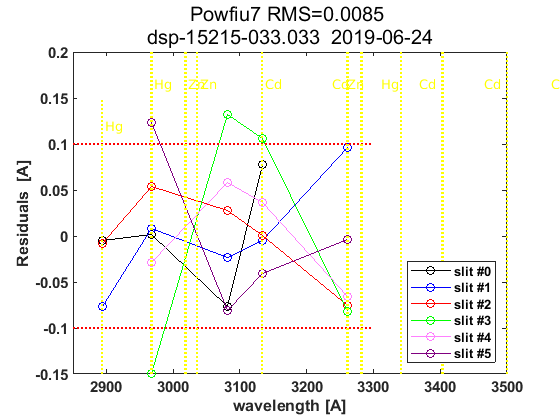
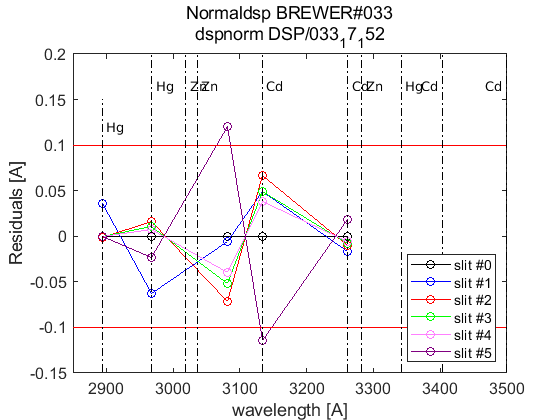

Contents
Brewer Evaluation
clear all;
file_setup='arenos2019_setup';
eval(file_setup);
Cal.n_inst=find(Cal.brw==033);
Cal.file_latex=fullfile('.','latex',Cal.brw_str{Cal.n_inst});
Cal.dir_figs=fullfile('latex',filesep(),Cal.brw_str{Cal.n_inst},...
filesep(),[Cal.brw_str{Cal.n_inst},'_figures'],filesep());
mkdir(Cal.dir_figs);
try
save(Cal.file_save,'-Append','Cal');
catch exception
fprintf('Error: %s\n Initializing data for Brewer %s\n',exception.message,Cal.brw_name{Cal.n_inst});
save(Cal.file_save);
end
ans =
logical
1
ans =
1×1 cell array
{'IZO#185'}
ans =
20×9 cell array
Columns 1 through 5
{'TSK#005'} {[ 5]} {[2]} {[0]} {'005'}
{'IOS#017'} {[ 17]} {[2]} {[0]} {'017'}
{'SCO#033'} {[ 33]} {[2]} {[0]} {'033'}
{'MAD#070'} {[ 70]} {[4]} {[0]} {'070'}
{'UK_#075'} {[ 75]} {[4]} {[0]} {'075'}
{'MUR#117'} {[117]} {[4]} {[0]} {'117'}
{'UK_#126'} {[126]} {[4]} {[0]} {'126'}
{'ARE#150'} {[150]} {[3]} {[0]} {'150'}
{'COR#151'} {[151]} {[4]} {[0]} {'151'}
{'K&Z#158'} {[158]} {[3]} {[0]} {'158'}
{'WRC#163'} {[163]} {[3]} {[0]} {'163'}
{'ZAR#166'} {[166]} {[4]} {[0]} {'166'}
{'UK_#172'} {[172]} {[3]} {[0]} {'172'}
{'JAP#174'} {[174]} {[3]} {[0]} {'174'}
{'IZO#185'} {[185]} {[3]} {[0]} {'185'}
{'MAD#186'} {[186]} {[3]} {[0]} {'186'}
{'CAN#190'} {[190]} {[3]} {[0]} {'190'}
{'TAM#201'} {[201]} {[3]} {[0]} {'201'}
{'DNK#202'} {[202]} {[3]} {[0]} {'202'}
{'DNK#228'} {[228]} {[3]} {[0]} {'228'}
Columns 6 through 9
{'..\005\ICF15117…'} {'..\005\ICF15117…'} {'1838'} {'1838'}
{'..\017\ICF14919…'} {'..\017\ICF14919…'} {'1680'} {'1680'}
{'..\033\ICF15617…'} {'..\033\IOS15617…'} {'2325'} {'2325'}
{'..\070\ICF15617…'} {'..\070\IOS15617…'} {'1685'} {'1685'}
{'..\075\ICF15017…'} {'..\075\ICF15017…'} {'1714'} {'1714'}
{'..\117\ICF15517…'} {'..\117\IOS15517…'} {'1620'} {'1620'}
{'..\126\icf15517…'} {'..\126\ICF17419…'} {'1710'} {'1710'}
{'..\150\ICF15617…'} {'..\150\ICF15617…'} {'0322'} {'0322'}
{'..\151\ICF15317…'} {'..\151\IOS15317…'} {'1880'} {'1880'}
{'..\158\ICF21218…'} {'..\158\ICF21218…'} {'0558'} {'0558'}
{'..\163\ICF23318…'} {'..\163\ICF23318…'} {'0274'} {'0274'}
{'..\166\ICF15217…'} {'..\166\ICF17419…'} {'1955'} {'1955'}
{'..\172\ICF15117…'} {'..\172\ICF15117…'} {'0444'} {'0444'}
{'..\174\ICF20718…'} {'..\174\ICF20718…'} {'0605'} {'0605'}
{'..\185\config18…'} {'..\185\ICF09819…'} {'0365'} {'0367'}
{'..\186\ICF15317…'} {'..\186\IOS15317…'} {'0315'} {'0315'}
{'..\190\ICF11419…'} {'..\190\ICF11419…'} {'0410'} {'0410'}
{'..\201\ICF14315…'} {'..\201\ICF14315…'} {'0320'} {'0320'}
{'..\202\ICF15017…'} {'..\202\ICF15017…'} {'0270'} {'0270'}
{'..\228\ICF15017…'} {'..\228\ICF17319…'} {'0242'} {'0242'}
Warning: Directory already exists.
configuration files
close all
[config_def,TCdef,DTdef,ETCdef,A1def,ATdef]=read_icf(Cal.brw_config_files{Cal.n_inst,2});
[config_orig,TCorig,DTorig,ETCorig,A1orig,ATorig]=read_icf(Cal.brw_config_files{Cal.n_inst,1});
Station.OSC=680;
Station.name='';
Station.lat=67;
Station.long=50;
Station.meanozo=350;
cal_step={}; sc_avg={}; sc_raw={}; Args={};
Sun_scan: Before Campaign
close all
[cal_step{1},sc_avg{1},sc_raw{1},Args{1}]=sc_report(Cal.brw_str{Cal.n_inst},Cal.brw_config_files{Cal.n_inst,1},...
'date_range',datenum(Cal.Date.cal_year,1,[1 159]),...
'CSN_orig',config_orig(14),'OSC',Station.OSC,...
'control_flag',1,'residual_limit',35,...
'hg_time',15,'one_flag',0);
033
OK->B12319.033
OK->B12719.033
OK->B12819.033
OK->B12919.033
OK->B13019.033
OK->B13119.033
OK->B13219.033
OK->B13319.033
OK->B13419.033
OK->B13519.033
OK->B13619.033
OK->B13719.033
OK->B13819.033
OK->B13919.033
OK->B14019.033
OK->B14119.033
OK->B14219.033
OK->B14319.033
OK->B14419.033
OK->B14519.033
OK->B14619.033
OK->B14719.033
OK->B14819.033
OK->B14919.033
OK->B15019.033
OK->B15119.033
OK->B15219.033
OK->B15319.033
OK->B15419.033
OK->B15519.033
OK->B15619.033
OK->B15719.033
OK->B15819.033
Sun_scan: Campaign
[cal_step{2},sc_avg{2},sc_raw{2},Args{2}]=sc_report(Cal.brw_str{Cal.n_inst},Cal.brw_config_files{Cal.n_inst,2},...
'date_range',datenum(Cal.Date.cal_year,1,Cal.calibration_days{Cal.n_inst,1}([1 end])),...
'CSN_orig',config_def(14),'OSC',Station.OSC,...
'control_flag',1,'residual_limit',35,...
'hg_time',45,'one_flag',1);
033
OK->B16819.033
OK->B16919.033
OK->B17019.033
OK->B17119.033


ix=sort(findobj('tag','SC_INDIVIDUAL')); figure(ix); set(get(gca,'title'),'FontSize',8);
printfiles_report(ix',Cal.dir_figs,'aux_pattern',ix,'FontSize',.9,'Width',8.5,'Height',7);
ix=sort(findobj('tag','Final_SC_Calculation'));
if length(ix)>1
Width=8; Height=6;
for i=1:length(ix), figure(ix(i)); set(get(gca,'title'),'FontSize',8); end
else
Width=13; Height=8;
end
printfiles_report(ix',Cal.dir_figs,'aux_pattern',ix,'Width',Width,'Height',Height);
close all
naux =
1
naux =
1
figura =
'033_figures_Final_SC_Calculation_1'
naux =
2
Definicion de variables: SC
if length(cal_step)>1
d_p=[length(cal_step)-1 length(cal_step)]; tags={'','new'};
else
d_p=1; tags={'new'};
end
idx=1; cal_step_error={};
for t=d_p
cal_step_error{t}=round(mean([abs(cal_step{t}(2)-cal_step{t}(3)),abs(cal_step{t}(2)-cal_step{t}(4))]));
latexcmd(fullfile(Cal.file_latex,['cal_wavelengthSC',tags{idx},'_',Cal.brw_str{Cal.n_inst}]),...
['\numSC',tags{idx}],size(sc_avg{t},1),...
['\CALCSTEP',tags{idx}],round(cal_step{t}(1)),...
['\calsteperror',tags{idx}],cal_step_error{t});
idx=idx+1;
end
load(Cal.file_save,'sunscan');sunscan{Cal.n_inst}.cal_step=cal_step;
sunscan{Cal.n_inst}.cal_step_error=cal_step_error;
sunscan{Cal.n_inst}.sc_avg=sc_avg; sunscan{Cal.n_inst}.sc_raw=sc_raw;
sunscan{Cal.n_inst}.info=Args;
save(Cal.file_save,'-APPEND','sunscan');
dsp calibration
res={}; detail={}; DSP_QUAD={}; QUAD_SUM={}; QUAD_DETAIL={};
CUBIC_SUM={}; CUBIC_DETAIL={}; salida={}; CSN_icf={};
l=dir(fullfile('DSP',[Cal.brw_str{Cal.n_inst},'*']));
ldsp=cellstr(cat(1,l.name));
ldsp=ldsp(end-3:end)
for jj=1:length(ldsp)
if jj==length(ldsp),confign=2; else confign=1; end
try
[res{jj},detail{jj},DSP_QUAD{jj},QUAD_SUM{jj},QUAD_DETAIL{jj},...
CUBIC_SUM{jj},CUBIC_DETAIL{jj},salida{jj},CSN_icf{jj},...
]=dspreport(Cal,'dsp_dir',fullfile('DSP',ldsp{jj}),'config_n',1);
catch
warning(sprintf('Error en %s. DSP: %s',Cal.brw_name{Cal.n_inst},ldsp{jj}));
res{jj}=NaN*ones(15,9,2); detail{jj}=NaN*ones(7,6,15,2); QUAD_DETAIL{jj}=NaN;
end
datefile =
735390
now:W1015513.033
now:W3015513.033
now:W7015513.033
now:W8015513.033
now:W1115513.033
now:W3115513.033
now:W7115513.033
now:W8115513.033
now:W9115513.033
now:W1215513.033
now:W3215513.033
now:W7215513.033
now:W8215513.033
now:W9215513.033
now:W3315513.033
now:W7315513.033
now:W8315513.033
now:W9315513.033
now:W3415513.033
now:W7415513.033
now:W8415513.033
now:W9415513.033
now:W3515513.033
now:W7515513.033
now:W8515513.033
now:W9515513.033
lines_dsp_15513__033
saving alldsp to DSP/033_13_156/alldsp_15513_033.033
eliminamos la linea slit 2 2967.280000 -0.121545
eliminamos la linea slit 1 2967.280000 -0.121490
saving normaldsp to DSP/033_13_156/dspnorm_15513_033.033 as brewer compatible file
Use polyval(pwl(2,:),wl) for calculating normal wavelengths
Saving ozonecoeffs to DSP/033_13_156/opos15513_033.033
909 WL(A) 3020.32 3062.34 3099.97 3134.55 3167.69 3199.73
Res(A) 7.40 10.44 10.23 10.73 10.44 10.48
O3abs(1/cm) 3.1650 1.7953 1.0071 0.6791 0.3742 0.2962 O3: 0.3478
Daumt O3abs(1/cm) 3.1690 1.7886 0.9987 0.6723 0.3672 0.2964 O3: 0.3586
So2abs(1/cm) 8.0468 5.4519 2.3431 1.9762 1.0499 0.6208
Bremen O3abs(1/cm) 3.1615 1.7924 1.0044 0.6819 0.3724 0.2976 O3: 0.3500
Nicolet 1e4*Rayabs(1/cm) 5135.2 4836.8 4588.1 4373.8 4180.3 4003.5 R: 10.4682
Bates(fix) 1e4*Rayabs(1/cm) 0.0 4870.0 4620.0 4410.0 4220.0 4040.0 R: -1.0000
Bodhaine 1e4*Rayabs(1/cm) 5131.1 4834.8 4587.6 4374.5 4181.9 4005.8 R: 10.0908
I0(mW m^-2nm^-1) 14975.55 9439.75 7428.78 4917.54 4048.88 3221.79 ETC: 1540
Ozone offset due to Rayleigh (RayCOeff/O3Coeff): -3.0 DU
Ozone offset due to Rayleigh (Bodhaine): -3.2 DU
Ratio Ozone for So2(A3)= 1.1714, So2/O3(A2)= 2.5856
O3 factor from Bass & Paur to Daumont = 0.9700
O3 factor from Bass & Paur to Bremen = 0.9938
910 WL(A) 3020.39 3062.41 3100.04 3134.62 3167.76 3199.80
Res(A) 7.40 10.44 10.23 10.73 10.44 10.48
O3abs(1/cm) 3.1625 1.7939 1.0069 0.6790 0.3743 0.2958 O3: 0.3468
Daumt O3abs(1/cm) 3.1666 1.7875 0.9984 0.6723 0.3672 0.2961 O3: 0.3578
So2abs(1/cm) 8.0855 5.4797 2.3494 1.9650 1.0512 0.6188
Bremen O3abs(1/cm) 3.1590 1.7911 1.0041 0.6819 0.3725 0.2973 O3: 0.3491
Nicolet 1e4*Rayabs(1/cm) 5134.7 4836.4 4587.7 4373.4 4179.9 4003.1 R: 10.4662
Bates(fix) 1e4*Rayabs(1/cm) 0.0 4870.0 4620.0 4410.0 4220.0 4040.0 R: -1.0000
Bodhaine 1e4*Rayabs(1/cm) 5130.6 4834.4 4587.2 4374.0 4181.5 4005.4 R: 10.0887
I0(mW m^-2nm^-1) 14975.55 9433.00 7400.13 4915.09 4038.53 3213.61 ETC: 1521
Ozone offset due to Rayleigh (RayCOeff/O3Coeff): -3.0 DU
Ozone offset due to Rayleigh (Bodhaine): -3.2 DU
Ratio Ozone for So2(A3)= 1.1685, So2/O3(A2)= 2.6058
O3 factor from Bass & Paur to Daumont = 0.9693
O3 factor from Bass & Paur to Bremen = 0.9932
911 WL(A) 3020.46 3062.47 3100.11 3134.69 3167.82 3199.86
Res(A) 7.40 10.44 10.23 10.73 10.44 10.48
O3abs(1/cm) 3.1599 1.7925 1.0066 0.6789 0.3744 0.2954 O3: 0.3457
Daumt O3abs(1/cm) 3.1642 1.7863 0.9981 0.6722 0.3673 0.2958 O3: 0.3569
So2abs(1/cm) 8.1243 5.5075 2.3558 1.9541 1.0524 0.6167
Bremen O3abs(1/cm) 3.1566 1.7898 1.0038 0.6818 0.3725 0.2970 O3: 0.3483
Nicolet 1e4*Rayabs(1/cm) 5134.2 4835.9 4587.2 4373.0 4179.5 4002.8 R: 10.4643
Bates(fix) 1e4*Rayabs(1/cm) 0.0 4870.0 4620.0 4410.0 4220.0 4040.0 R: -1.0000
Bodhaine 1e4*Rayabs(1/cm) 5130.1 4833.9 4586.7 4373.6 4181.1 4005.1 R: 10.0923
I0(mW m^-2nm^-1) 14975.55 9426.27 7371.67 4911.36 4028.20 3203.63 ETC: 1500
Ozone offset due to Rayleigh (RayCOeff/O3Coeff): -3.0 DU
Ozone offset due to Rayleigh (Bodhaine): -3.2 DU
Ratio Ozone for So2(A3)= 1.1654, So2/O3(A2)= 2.6264
O3 factor from Bass & Paur to Daumont = 0.9684
O3 factor from Bass & Paur to Bremen = 0.9926
912 WL(A) 3020.53 3062.54 3100.18 3134.75 3167.89 3199.93
Res(A) 7.40 10.44 10.23 10.73 10.44 10.48
O3abs(1/cm) 3.1573 1.7912 1.0064 0.6786 0.3744 0.2949 O3: 0.3446
Daumt O3abs(1/cm) 3.1617 1.7851 0.9979 0.6722 0.3673 0.2955 O3: 0.3560
So2abs(1/cm) 8.1602 5.5346 2.3621 1.9432 1.0537 0.6146
Bremen O3abs(1/cm) 3.1541 1.7885 1.0035 0.6817 0.3726 0.2966 O3: 0.3473
Nicolet 1e4*Rayabs(1/cm) 5133.7 4835.4 4586.8 4372.6 4179.2 4002.4 R: 10.4624
Bates(fix) 1e4*Rayabs(1/cm) 0.0 4870.0 4620.0 4410.0 4220.0 4040.0 R: -1.0000
Bodhaine 1e4*Rayabs(1/cm) 5129.6 4833.4 4586.3 4373.2 4180.7 4004.7 R: 10.0854
I0(mW m^-2nm^-1) 14975.55 9419.54 7350.89 4907.28 4017.89 3193.67 ETC: 1487
Ozone offset due to Rayleigh (RayCOeff/O3Coeff): -3.0 DU
Ozone offset due to Rayleigh (Bodhaine): -3.2 DU
Ratio Ozone for So2(A3)= 1.1622, So2/O3(A2)= 2.6467
O3 factor from Bass & Paur to Daumont = 0.9679
O3 factor from Bass & Paur to Bremen = 0.9922
913 WL(A) 3020.60 3062.61 3100.24 3134.82 3167.96 3200.00
Res(A) 7.40 10.44 10.23 10.73 10.44 10.48
O3abs(1/cm) 3.1547 1.7898 1.0062 0.6784 0.3745 0.2944 O3: 0.3436
Daumt O3abs(1/cm) 3.1592 1.7839 0.9976 0.6721 0.3674 0.2951 O3: 0.3551
So2abs(1/cm) 8.1925 5.5602 2.3691 1.9319 1.0549 0.6125
Bremen O3abs(1/cm) 3.1517 1.7872 1.0033 0.6815 0.3726 0.2962 O3: 0.3463
Nicolet 1e4*Rayabs(1/cm) 5133.2 4835.0 4586.4 4372.2 4178.8 4002.1 R: 10.4605
Bates(fix) 1e4*Rayabs(1/cm) 0.0 4870.0 4620.0 4410.0 4220.0 4040.0 R: -1.0000
Bodhaine 1e4*Rayabs(1/cm) 5129.1 4832.9 4585.9 4372.8 4180.4 4004.4 R: 10.0837
I0(mW m^-2nm^-1) 14975.55 9412.83 7331.99 4903.20 4007.61 3183.74 ETC: 1476
Ozone offset due to Rayleigh (RayCOeff/O3Coeff): -3.0 DU
Ozone offset due to Rayleigh (Bodhaine): -3.2 DU
Ratio Ozone for So2(A3)= 1.1590, So2/O3(A2)= 2.6656
O3 factor from Bass & Paur to Daumont = 0.9676
O3 factor from Bass & Paur to Bremen = 0.9921
914 WL(A) 3020.67 3062.68 3100.31 3134.89 3168.02 3200.06
Res(A) 7.40 10.44 10.23 10.73 10.44 10.48
O3abs(1/cm) 3.1521 1.7885 1.0060 0.6781 0.3746 0.2940 O3: 0.3426
Daumt O3abs(1/cm) 3.1567 1.7826 0.9973 0.6720 0.3674 0.2948 O3: 0.3541
So2abs(1/cm) 8.2242 5.5851 2.3761 1.9205 1.0561 0.6103
Bremen O3abs(1/cm) 3.1492 1.7859 1.0030 0.6814 0.3727 0.2959 O3: 0.3453
Nicolet 1e4*Rayabs(1/cm) 5132.7 4834.5 4585.9 4371.8 4178.4 4001.7 R: 10.4585
Bates(fix) 1e4*Rayabs(1/cm) 0.0 4870.0 4620.0 4410.0 4220.0 4040.0 R: -1.0000
Bodhaine 1e4*Rayabs(1/cm) 5128.6 4832.5 4585.4 4372.4 4180.0 4004.0 R: 10.0866
I0(mW m^-2nm^-1) 14975.55 9406.13 7313.70 4899.12 3997.36 3173.83 ETC: 1465
Ozone offset due to Rayleigh (RayCOeff/O3Coeff): -3.1 DU
Ozone offset due to Rayleigh (Bodhaine): -3.2 DU
Ratio Ozone for So2(A3)= 1.1559, So2/O3(A2)= 2.6840
O3 factor from Bass & Paur to Daumont = 0.9674
O3 factor from Bass & Paur to Bremen = 0.9921
915 WL(A) 3020.74 3062.75 3100.38 3134.96 3168.09 3200.13
Res(A) 7.40 10.44 10.23 10.73 10.44 10.48
O3abs(1/cm) 3.1496 1.7871 1.0058 0.6778 0.3747 0.2935 O3: 0.3416
Daumt O3abs(1/cm) 3.1542 1.7813 0.9971 0.6719 0.3675 0.2944 O3: 0.3531
So2abs(1/cm) 8.2558 5.6100 2.3832 1.9092 1.0573 0.6081
Bremen O3abs(1/cm) 3.1467 1.7845 1.0027 0.6812 0.3728 0.2955 O3: 0.3443
Nicolet 1e4*Rayabs(1/cm) 5132.1 4834.0 4585.5 4371.4 4178.0 4001.4 R: 10.4566
Bates(fix) 1e4*Rayabs(1/cm) 0.0 4870.0 4620.0 4410.0 4220.0 4040.0 R: -1.0000
Bodhaine 1e4*Rayabs(1/cm) 5128.1 4832.0 4585.0 4372.0 4179.6 4003.7 R: 10.0801
I0(mW m^-2nm^-1) 14975.55 9399.43 7295.99 4895.05 3987.12 3163.94 ETC: 1455
Ozone offset due to Rayleigh (RayCOeff/O3Coeff): -3.1 DU
Ozone offset due to Rayleigh (Bodhaine): -3.2 DU
Ratio Ozone for So2(A3)= 1.1527, So2/O3(A2)= 2.7025
O3 factor from Bass & Paur to Daumont = 0.9674
O3 factor from Bass & Paur to Bremen = 0.9923
916 WL(A) 3020.81 3062.82 3100.45 3135.02 3168.16 3200.19
Res(A) 7.40 10.44 10.23 10.73 10.44 10.48
O3abs(1/cm) 3.1472 1.7857 1.0055 0.6775 0.3747 0.2930 O3: 0.3405
Daumt O3abs(1/cm) 3.1516 1.7801 0.9968 0.6717 0.3676 0.2940 O3: 0.3520
So2abs(1/cm) 8.2863 5.6349 2.3904 1.8982 1.0585 0.6059
Bremen O3abs(1/cm) 3.1441 1.7831 1.0024 0.6810 0.3729 0.2951 O3: 0.3432
Nicolet 1e4*Rayabs(1/cm) 5131.6 4833.5 4585.1 4371.0 4177.7 4001.0 R: 10.4547
Bates(fix) 1e4*Rayabs(1/cm) 0.0 4870.0 4620.0 4410.0 4220.0 4040.0 R: -1.0000
Bodhaine 1e4*Rayabs(1/cm) 5127.6 4831.5 4584.6 4371.6 4179.2 4003.3 R: 10.0786
I0(mW m^-2nm^-1) 14975.55 9392.75 7278.82 4890.98 3976.91 3154.07 ETC: 1446
Ozone offset due to Rayleigh (RayCOeff/O3Coeff): -3.1 DU
Ozone offset due to Rayleigh (Bodhaine): -3.3 DU
Ratio Ozone for So2(A3)= 1.1495, So2/O3(A2)= 2.7213
O3 factor from Bass & Paur to Daumont = 0.9672
O3 factor from Bass & Paur to Bremen = 0.9923
917 WL(A) 3020.88 3062.89 3100.52 3135.09 3168.22 3200.26
Res(A) 7.40 10.44 10.23 10.73 10.44 10.48
O3abs(1/cm) 3.1444 1.7842 1.0053 0.6772 0.3748 0.2925 O3: 0.3393
Daumt O3abs(1/cm) 3.1490 1.7788 0.9965 0.6715 0.3677 0.2936 O3: 0.3510
So2abs(1/cm) 8.3121 5.6575 2.3979 1.8869 1.0597 0.6037
Bremen O3abs(1/cm) 3.1416 1.7818 1.0022 0.6808 0.3730 0.2946 O3: 0.3420
Nicolet 1e4*Rayabs(1/cm) 5131.1 4833.1 4584.6 4370.6 4177.3 4000.7 R: 10.4528
Bates(fix) 1e4*Rayabs(1/cm) 0.0 4870.0 4620.0 4410.0 4220.0 4040.0 R: -1.0000
Bodhaine 1e4*Rayabs(1/cm) 5127.1 4831.1 4584.1 4371.2 4178.9 4003.0 R: 10.0805
I0(mW m^-2nm^-1) 14975.55 9386.07 7262.18 4886.91 3966.73 3145.91 ETC: 1440
Ozone offset due to Rayleigh (RayCOeff/O3Coeff): -3.1 DU
Ozone offset due to Rayleigh (Bodhaine): -3.3 DU
Ratio Ozone for So2(A3)= 1.1459, So2/O3(A2)= 2.7388
O3 factor from Bass & Paur to Daumont = 0.9668
O3 factor from Bass & Paur to Bremen = 0.9921
918 WL(A) 3020.95 3062.96 3100.58 3135.16 3168.29 3200.32
Res(A) 7.39 10.44 10.23 10.73 10.44 10.48
O3abs(1/cm) 3.1416 1.7828 1.0050 0.6768 0.3750 0.2919 O3: 0.3379
Daumt O3abs(1/cm) 3.1463 1.7775 0.9962 0.6713 0.3678 0.2932 O3: 0.3498
So2abs(1/cm) 8.3365 5.6795 2.4057 1.8755 1.0609 0.6014
Bremen O3abs(1/cm) 3.1390 1.7803 1.0019 0.6805 0.3731 0.2942 O3: 0.3409
Nicolet 1e4*Rayabs(1/cm) 5130.6 4832.6 4584.2 4370.2 4176.9 4000.3 R: 10.4509
Bates(fix) 1e4*Rayabs(1/cm) 0.0 4870.0 4620.0 4410.0 4220.0 4040.0 R: -1.0000
Bodhaine 1e4*Rayabs(1/cm) 5126.5 4830.6 4583.7 4370.8 4178.5 4002.6 R: 10.0748
I0(mW m^-2nm^-1) 14975.55 9379.41 7246.04 4882.85 3956.56 3142.47 ETC: 1442
Ozone offset due to Rayleigh (RayCOeff/O3Coeff): -3.1 DU
Ozone offset due to Rayleigh (Bodhaine): -3.3 DU
Ratio Ozone for So2(A3)= 1.1421, So2/O3(A2)= 2.7566
O3 factor from Bass & Paur to Daumont = 0.9661
O3 factor from Bass & Paur to Bremen = 0.9915
919 WL(A) 3021.02 3063.03 3100.65 3135.23 3168.36 3200.39
Res(A) 7.39 10.44 10.23 10.73 10.44 10.48
O3abs(1/cm) 3.1388 1.7813 1.0048 0.6764 0.3751 0.2914 O3: 0.3366
Daumt O3abs(1/cm) 3.1436 1.7761 0.9960 0.6711 0.3679 0.2927 O3: 0.3486
So2abs(1/cm) 8.3606 5.7011 2.4135 1.8640 1.0620 0.5991
Bremen O3abs(1/cm) 3.1364 1.7789 1.0016 0.6803 0.3733 0.2937 O3: 0.3396
Nicolet 1e4*Rayabs(1/cm) 5130.1 4832.1 4583.8 4369.8 4176.5 4000.0 R: 10.4489
Bates(fix) 1e4*Rayabs(1/cm) 0.0 4870.0 4620.0 4410.0 4220.0 4040.0 R: -1.0000
Bodhaine 1e4*Rayabs(1/cm) 5126.0 4830.1 4583.3 4370.4 4178.1 4002.3 R: 10.0736
I0(mW m^-2nm^-1) 14975.55 9372.75 7230.38 4878.79 3946.42 3139.11 ETC: 1445
Ozone offset due to Rayleigh (RayCOeff/O3Coeff): -3.1 DU
Ozone offset due to Rayleigh (Bodhaine): -3.3 DU
Ratio Ozone for So2(A3)= 1.1382, So2/O3(A2)= 2.7742
O3 factor from Bass & Paur to Daumont = 0.9656
O3 factor from Bass & Paur to Bremen = 0.9912
saving powfiu7 to DSP/033_13_156/dsp_15513_033.033
freecoef =
4
freecoef =
9
freecoef =
9
freecoef =
9
freecoef =
9
freecoef =
9
freecoef =
9
freecoef =
9
freecoef =
9
freecoef =
9
saving data to file:DSP/033_13_156/dsp_15513_033.033
Use brstps2 to calculate steps and wavelengths
Saving ozonecoeffs to DSP/033_13_156/opos_pow7_15513_033.033
909 WL(A) 3020.56 3062.40 3099.96 3134.54 3167.65 3199.69
Res(A) 7.39 10.43 10.22 10.72 10.43 10.48
O3abs(1/cm) 3.1563 1.7940 1.0072 0.6792 0.3742 0.2965 O3: 0.3484
Daumt O3abs(1/cm) 3.1607 1.7876 0.9987 0.6723 0.3672 0.2966 O3: 0.3590
So2abs(1/cm) 8.1736 5.4791 2.3420 1.9776 1.0491 0.6221
Bremen O3abs(1/cm) 3.1532 1.7912 1.0044 0.6820 0.3724 0.2978 O3: 0.3504
Nicolet 1e4*Rayabs(1/cm) 5133.5 4836.4 4588.2 4373.9 4180.5 4003.7 R: 10.3727
Bates(fix) 1e4*Rayabs(1/cm) 0.0 4870.0 4620.0 4410.0 4220.0 4040.0 R: -1.0000
Bodhaine 1e4*Rayabs(1/cm) 5129.4 4834.4 4587.7 4374.5 4182.1 4006.0 R: 9.9983
I0(mW m^-2nm^-1) 14975.55 9433.35 7434.19 4917.66 4055.52 3225.34 ETC: 1536
Ozone offset due to Rayleigh (RayCOeff/O3Coeff): -3.0 DU
Ozone offset due to Rayleigh (Bodhaine): -3.2 DU
Ratio Ozone for So2(A3)= 1.1711, So2/O3(A2)= 2.6160
O3 factor from Bass & Paur to Daumont = 0.9704
O3 factor from Bass & Paur to Bremen = 0.9941
910 WL(A) 3020.63 3062.47 3100.03 3134.61 3167.71 3199.75
Res(A) 7.39 10.43 10.22 10.72 10.43 10.48
O3abs(1/cm) 3.1537 1.7926 1.0069 0.6791 0.3742 0.2961 O3: 0.3474
Daumt O3abs(1/cm) 3.1582 1.7864 0.9985 0.6723 0.3672 0.2963 O3: 0.3582
So2abs(1/cm) 8.2056 5.5069 2.3483 1.9665 1.0503 0.6201
Bremen O3abs(1/cm) 3.1507 1.7899 1.0041 0.6819 0.3724 0.2975 O3: 0.3496
Nicolet 1e4*Rayabs(1/cm) 5133.0 4835.9 4587.7 4373.4 4180.2 4003.4 R: 10.3703
Bates(fix) 1e4*Rayabs(1/cm) 0.0 4870.0 4620.0 4410.0 4220.0 4040.0 R: -1.0000
Bodhaine 1e4*Rayabs(1/cm) 5128.9 4833.9 4587.2 4374.1 4181.7 4005.6 R: 9.9977
I0(mW m^-2nm^-1) 14975.55 9426.61 7405.43 4915.22 4045.15 3219.94 ETC: 1522
Ozone offset due to Rayleigh (RayCOeff/O3Coeff): -3.0 DU
Ozone offset due to Rayleigh (Bodhaine): -3.2 DU
Ratio Ozone for So2(A3)= 1.1684, So2/O3(A2)= 2.6359
O3 factor from Bass & Paur to Daumont = 0.9699
O3 factor from Bass & Paur to Bremen = 0.9938
911 WL(A) 3020.70 3062.54 3100.10 3134.68 3167.78 3199.82
Res(A) 7.39 10.43 10.22 10.72 10.43 10.48
O3abs(1/cm) 3.1511 1.7913 1.0066 0.6789 0.3743 0.2957 O3: 0.3463
Daumt O3abs(1/cm) 3.1557 1.7852 0.9982 0.6723 0.3672 0.2960 O3: 0.3574
So2abs(1/cm) 8.2373 5.5340 2.3546 1.9555 1.0516 0.6181
Bremen O3abs(1/cm) 3.1482 1.7886 1.0039 0.6818 0.3725 0.2972 O3: 0.3488
Nicolet 1e4*Rayabs(1/cm) 5132.5 4835.4 4587.3 4373.0 4179.8 4003.0 R: 10.3680
Bates(fix) 1e4*Rayabs(1/cm) 0.0 4870.0 4620.0 4410.0 4220.0 4040.0 R: -1.0000
Bodhaine 1e4*Rayabs(1/cm) 5128.4 4833.4 4586.8 4373.7 4181.4 4005.3 R: 9.9899
I0(mW m^-2nm^-1) 14975.55 9419.88 7376.87 4911.83 4034.80 3210.29 ETC: 1502
Ozone offset due to Rayleigh (RayCOeff/O3Coeff): -3.0 DU
Ozone offset due to Rayleigh (Bodhaine): -3.2 DU
Ratio Ozone for So2(A3)= 1.1653, So2/O3(A2)= 2.6559
O3 factor from Bass & Paur to Daumont = 0.9690
O3 factor from Bass & Paur to Bremen = 0.9931
912 WL(A) 3020.77 3062.61 3100.16 3134.75 3167.85 3199.89
Res(A) 7.39 10.43 10.22 10.72 10.43 10.48
O3abs(1/cm) 3.1487 1.7899 1.0064 0.6787 0.3744 0.2952 O3: 0.3453
Daumt O3abs(1/cm) 3.1532 1.7839 0.9979 0.6722 0.3673 0.2957 O3: 0.3565
So2abs(1/cm) 8.2689 5.5596 2.3610 1.9447 1.0529 0.6160
Bremen O3abs(1/cm) 3.1457 1.7873 1.0036 0.6817 0.3725 0.2968 O3: 0.3478
Nicolet 1e4*Rayabs(1/cm) 5131.9 4835.0 4586.9 4372.6 4179.4 4002.7 R: 10.3656
Bates(fix) 1e4*Rayabs(1/cm) 0.0 4870.0 4620.0 4410.0 4220.0 4040.0 R: -1.0000
Bodhaine 1e4*Rayabs(1/cm) 5127.9 4833.0 4586.4 4373.3 4181.0 4004.9 R: 9.9920
I0(mW m^-2nm^-1) 14975.55 9413.16 7355.39 4907.74 4024.47 3200.32 ETC: 1488
Ozone offset due to Rayleigh (RayCOeff/O3Coeff): -3.0 DU
Ozone offset due to Rayleigh (Bodhaine): -3.2 DU
Ratio Ozone for So2(A3)= 1.1622, So2/O3(A2)= 2.6749
O3 factor from Bass & Paur to Daumont = 0.9684
O3 factor from Bass & Paur to Bremen = 0.9926
913 WL(A) 3020.84 3062.68 3100.23 3134.81 3167.91 3199.95
Res(A) 7.39 10.43 10.22 10.72 10.43 10.48
O3abs(1/cm) 3.1461 1.7886 1.0062 0.6785 0.3745 0.2947 O3: 0.3443
Daumt O3abs(1/cm) 3.1506 1.7827 0.9976 0.6721 0.3673 0.2954 O3: 0.3556
So2abs(1/cm) 8.2971 5.5846 2.3678 1.9334 1.0541 0.6139
Bremen O3abs(1/cm) 3.1431 1.7860 1.0033 0.6816 0.3726 0.2965 O3: 0.3469
Nicolet 1e4*Rayabs(1/cm) 5131.4 4834.5 4586.4 4372.2 4179.0 4002.3 R: 10.3633
Bates(fix) 1e4*Rayabs(1/cm) 0.0 4870.0 4620.0 4410.0 4220.0 4040.0 R: -1.0000
Bodhaine 1e4*Rayabs(1/cm) 5127.4 4832.5 4585.9 4372.9 4180.6 4004.6 R: 9.9904
I0(mW m^-2nm^-1) 14975.55 9406.45 7336.35 4903.65 4014.16 3190.37 ETC: 1477
Ozone offset due to Rayleigh (RayCOeff/O3Coeff): -3.0 DU
Ozone offset due to Rayleigh (Bodhaine): -3.2 DU
Ratio Ozone for So2(A3)= 1.1590, So2/O3(A2)= 2.6935
O3 factor from Bass & Paur to Daumont = 0.9680
O3 factor from Bass & Paur to Bremen = 0.9924
914 WL(A) 3020.91 3062.75 3100.30 3134.88 3167.98 3200.02
Res(A) 7.39 10.43 10.22 10.72 10.43 10.48
O3abs(1/cm) 3.1433 1.7872 1.0060 0.6782 0.3745 0.2943 O3: 0.3432
Daumt O3abs(1/cm) 3.1479 1.7814 0.9974 0.6720 0.3674 0.2950 O3: 0.3547
So2abs(1/cm) 8.3225 5.6095 2.3748 1.9220 1.0553 0.6117
Bremen O3abs(1/cm) 3.1406 1.7846 1.0030 0.6814 0.3726 0.2961 O3: 0.3459
Nicolet 1e4*Rayabs(1/cm) 5130.9 4834.0 4586.0 4371.8 4178.7 4002.0 R: 10.3609
Bates(fix) 1e4*Rayabs(1/cm) 0.0 4870.0 4620.0 4410.0 4220.0 4040.0 R: -1.0000
Bodhaine 1e4*Rayabs(1/cm) 5126.9 4832.0 4585.5 4372.5 4180.2 4004.2 R: 9.9828
I0(mW m^-2nm^-1) 14975.55 9399.74 7317.92 4899.56 4003.88 3180.44 ETC: 1466
Ozone offset due to Rayleigh (RayCOeff/O3Coeff): -3.0 DU
Ozone offset due to Rayleigh (Bodhaine): -3.2 DU
Ratio Ozone for So2(A3)= 1.1559, So2/O3(A2)= 2.7120
O3 factor from Bass & Paur to Daumont = 0.9677
O3 factor from Bass & Paur to Bremen = 0.9923
915 WL(A) 3020.98 3062.82 3100.37 3134.95 3168.05 3200.08
Res(A) 7.39 10.43 10.22 10.72 10.43 10.48
O3abs(1/cm) 3.1405 1.7858 1.0058 0.6779 0.3746 0.2938 O3: 0.3422
Daumt O3abs(1/cm) 3.1453 1.7802 0.9971 0.6719 0.3674 0.2947 O3: 0.3537
So2abs(1/cm) 8.3466 5.6344 2.3819 1.9106 1.0566 0.6096
Bremen O3abs(1/cm) 3.1380 1.7832 1.0028 0.6813 0.3727 0.2957 O3: 0.3449
Nicolet 1e4*Rayabs(1/cm) 5130.4 4833.6 4585.6 4371.4 4178.3 4001.6 R: 10.3586
Bates(fix) 1e4*Rayabs(1/cm) 0.0 4870.0 4620.0 4410.0 4220.0 4040.0 R: -1.0000
Bodhaine 1e4*Rayabs(1/cm) 5126.3 4831.6 4585.1 4372.1 4179.9 4003.9 R: 9.9856
I0(mW m^-2nm^-1) 14975.55 9393.05 7300.07 4895.48 3993.63 3170.54 ETC: 1456
Ozone offset due to Rayleigh (RayCOeff/O3Coeff): -3.0 DU
Ozone offset due to Rayleigh (Bodhaine): -3.2 DU
Ratio Ozone for So2(A3)= 1.1527, So2/O3(A2)= 2.7306
O3 factor from Bass & Paur to Daumont = 0.9676
O3 factor from Bass & Paur to Bremen = 0.9923
916 WL(A) 3021.05 3062.88 3100.44 3135.01 3168.11 3200.15
Res(A) 7.39 10.43 10.22 10.72 10.43 10.48
O3abs(1/cm) 3.1377 1.7844 1.0056 0.6775 0.3747 0.2933 O3: 0.3412
Daumt O3abs(1/cm) 3.1426 1.7789 0.9968 0.6718 0.3675 0.2943 O3: 0.3527
So2abs(1/cm) 8.3707 5.6571 2.3891 1.8997 1.0578 0.6074
Bremen O3abs(1/cm) 3.1354 1.7819 1.0025 0.6811 0.3728 0.2953 O3: 0.3438
Nicolet 1e4*Rayabs(1/cm) 5129.9 4833.1 4585.1 4371.0 4177.9 4001.2 R: 10.3562
Bates(fix) 1e4*Rayabs(1/cm) 0.0 4870.0 4620.0 4410.0 4220.0 4040.0 R: -1.0000
Bodhaine 1e4*Rayabs(1/cm) 5125.8 4831.1 4584.7 4371.7 4179.5 4003.5 R: 9.9831
I0(mW m^-2nm^-1) 14975.55 9386.37 7282.78 4891.40 3983.39 3160.65 ETC: 1447
Ozone offset due to Rayleigh (RayCOeff/O3Coeff): -3.0 DU
Ozone offset due to Rayleigh (Bodhaine): -3.2 DU
Ratio Ozone for So2(A3)= 1.1494, So2/O3(A2)= 2.7477
O3 factor from Bass & Paur to Daumont = 0.9675
O3 factor from Bass & Paur to Bremen = 0.9924
917 WL(A) 3021.12 3062.95 3100.50 3135.08 3168.18 3200.21
Res(A) 7.39 10.43 10.22 10.72 10.43 10.48
O3abs(1/cm) 3.1349 1.7829 1.0053 0.6772 0.3748 0.2928 O3: 0.3401
Daumt O3abs(1/cm) 3.1399 1.7776 0.9966 0.6716 0.3676 0.2939 O3: 0.3516
So2abs(1/cm) 8.3932 5.6791 2.3964 1.8885 1.0590 0.6052
Bremen O3abs(1/cm) 3.1328 1.7804 1.0022 0.6808 0.3729 0.2949 O3: 0.3427
Nicolet 1e4*Rayabs(1/cm) 5129.4 4832.6 4584.7 4370.6 4177.5 4000.9 R: 10.3539
Bates(fix) 1e4*Rayabs(1/cm) 0.0 4870.0 4620.0 4410.0 4220.0 4040.0 R: -1.0000
Bodhaine 1e4*Rayabs(1/cm) 5125.3 4830.6 4584.2 4371.3 4179.1 4003.2 R: 9.9759
I0(mW m^-2nm^-1) 14975.55 9379.70 7266.02 4887.33 3973.18 3150.79 ETC: 1438
Ozone offset due to Rayleigh (RayCOeff/O3Coeff): -3.0 DU
Ozone offset due to Rayleigh (Bodhaine): -3.2 DU
Ratio Ozone for So2(A3)= 1.1460, So2/O3(A2)= 2.7645
O3 factor from Bass & Paur to Daumont = 0.9672
O3 factor from Bass & Paur to Bremen = 0.9923
918 WL(A) 3021.19 3063.02 3100.57 3135.15 3168.25 3200.28
Res(A) 7.39 10.43 10.22 10.72 10.43 10.48
O3abs(1/cm) 3.1320 1.7814 1.0051 0.6769 0.3749 0.2923 O3: 0.3388
Daumt O3abs(1/cm) 3.1372 1.7762 0.9963 0.6714 0.3677 0.2935 O3: 0.3505
So2abs(1/cm) 8.4117 5.7008 2.4042 1.8770 1.0601 0.6029
Bremen O3abs(1/cm) 3.1301 1.7790 1.0019 0.6806 0.3730 0.2945 O3: 0.3416
Nicolet 1e4*Rayabs(1/cm) 5128.9 4832.2 4584.3 4370.2 4177.2 4000.5 R: 10.3515
Bates(fix) 1e4*Rayabs(1/cm) 0.0 4870.0 4620.0 4410.0 4220.0 4040.0 R: -1.0000
Bodhaine 1e4*Rayabs(1/cm) 5124.8 4830.2 4583.8 4370.9 4178.7 4002.8 R: 9.9792
I0(mW m^-2nm^-1) 14975.55 9373.04 7249.76 4883.26 3963.00 3144.80 ETC: 1436
Ozone offset due to Rayleigh (RayCOeff/O3Coeff): -3.1 DU
Ozone offset due to Rayleigh (Bodhaine): -3.2 DU
Ratio Ozone for So2(A3)= 1.1424, So2/O3(A2)= 2.7816
O3 factor from Bass & Paur to Daumont = 0.9667
O3 factor from Bass & Paur to Bremen = 0.9919
919 WL(A) 3021.26 3063.09 3100.64 3135.22 3168.31 3200.35
Res(A) 7.39 10.43 10.22 10.72 10.43 10.48
O3abs(1/cm) 3.1294 1.7799 1.0048 0.6765 0.3750 0.2918 O3: 0.3375
Daumt O3abs(1/cm) 3.1344 1.7749 0.9960 0.6712 0.3678 0.2930 O3: 0.3494
So2abs(1/cm) 8.4284 5.7224 2.4121 1.8655 1.0613 0.6006
Bremen O3abs(1/cm) 3.1275 1.7776 1.0016 0.6803 0.3732 0.2940 O3: 0.3404
Nicolet 1e4*Rayabs(1/cm) 5128.3 4831.7 4583.8 4369.8 4176.8 4000.2 R: 10.3492
Bates(fix) 1e4*Rayabs(1/cm) 0.0 4870.0 4620.0 4410.0 4220.0 4040.0 R: -1.0000
Bodhaine 1e4*Rayabs(1/cm) 5124.3 4829.7 4583.4 4370.5 4178.4 4002.5 R: 9.9759
I0(mW m^-2nm^-1) 14975.55 9366.38 7233.99 4879.19 3952.83 3141.38 ETC: 1439
Ozone offset due to Rayleigh (RayCOeff/O3Coeff): -3.1 DU
Ozone offset due to Rayleigh (Bodhaine): -3.3 DU
Ratio Ozone for So2(A3)= 1.1384, So2/O3(A2)= 2.7994
O3 factor from Bass & Paur to Daumont = 0.9661
O3 factor from Bass & Paur to Bremen = 0.9915
Warning: The EraseMode property is no
longer supported and will error in a
future release.
Warning: The EraseMode property is no
longer supported and will error in a
future release.
Warning: The EraseMode property is no
longer supported and will error in a
future release.
Warning: The EraseMode property is no
longer supported and will error in a
future release.
Warning: The EraseMode property is no
longer supported and will error in a
future release.
Warning: The EraseMode property is no
longer supported and will error in a
future release.
Warning: The EraseMode property is no
longer supported and will error in a
future release.
Warning: The EraseMode property is no
longer supported and will error in a
future release.
Warning: The EraseMode property is no
longer supported and will error in a
future release.
Warning: The EraseMode property is no
longer supported and will error in a
future release.
Warning: The EraseMode property is no
longer supported and will error in a
future release.
datefile =
736117
now:W1015415.033
now:W3015415.033
now:W7015215.033
now:W8015215.033
now:W1115415.033
now:W3115415.033
now:W7115215.033
now:W8115215.033
now:W9115215.033
now:W1215415.033
now:W3215415.033
now:W7215215.033
now:W8215215.033
now:W9215215.033
now:W3315415.033
now:W7315215.033
now:W8315215.033
now:W9315215.033
now:W3415415.033
now:W7415215.033
now:W8415215.033
now:W9415215.033
now:W3515415.033
now:W7515215.033
now:W8515215.033
now:W9515215.033
lines_dsp_15215__033
saving alldsp to DSP/033_15_153/alldsp_15215_033.033
eliminamos la linea slit 2 2967.280000 -0.136806
saving normaldsp to DSP/033_15_153/dspnorm_15215_033.033 as brewer compatible file
Use polyval(pwl(2,:),wl) for calculating normal wavelengths
Saving ozonecoeffs to DSP/033_15_153/opos15215_033.033
909 WL(A) 3020.55 3062.27 3100.01 3134.71 3167.78 3199.75
Res(A) 7.24 10.47 10.47 10.76 10.72 10.26
O3abs(1/cm) 3.1570 1.7965 1.0069 0.6787 0.3746 0.2966 O3: 0.3476
Daumt O3abs(1/cm) 3.1615 1.7898 0.9986 0.6721 0.3677 0.2968 O3: 0.3583
So2abs(1/cm) 8.1831 5.4221 2.3509 1.9499 1.0512 0.6210
Bremen O3abs(1/cm) 3.1538 1.7936 1.0043 0.6816 0.3729 0.2980 O3: 0.3497
Nicolet 1e4*Rayabs(1/cm) 5133.6 4837.3 4587.8 4372.8 4179.8 4003.4 R: 11.5851
Bates(fix) 1e4*Rayabs(1/cm) 0.0 4870.0 4620.0 4410.0 4220.0 4040.0 R: -1.0000
Bodhaine 1e4*Rayabs(1/cm) 5129.5 4835.3 4587.3 4373.5 4181.4 4005.7 R: 11.2012
I0(mW m^-2nm^-1) 14975.55 9446.48 7391.56 4909.98 4037.40 3211.36 ETC: 1514
Ozone offset due to Rayleigh (RayCOeff/O3Coeff): -3.3 DU
Ozone offset due to Rayleigh (Bodhaine): -3.5 DU
Ratio Ozone for So2(A3)= 1.1722, So2/O3(A2)= 2.5542
O3 factor from Bass & Paur to Daumont = 0.9704
O3 factor from Bass & Paur to Bremen = 0.9942
910 WL(A) 3020.62 3062.34 3100.08 3134.78 3167.84 3199.82
Res(A) 7.24 10.47 10.47 10.76 10.72 10.26
O3abs(1/cm) 3.1543 1.7952 1.0067 0.6784 0.3746 0.2962 O3: 0.3468
Daumt O3abs(1/cm) 3.1590 1.7886 0.9983 0.6721 0.3677 0.2965 O3: 0.3575
So2abs(1/cm) 8.2168 5.4503 2.3571 1.9387 1.0524 0.6189
Bremen O3abs(1/cm) 3.1513 1.7924 1.0040 0.6815 0.3729 0.2977 O3: 0.3488
Nicolet 1e4*Rayabs(1/cm) 5133.1 4836.8 4587.4 4372.4 4179.4 4003.0 R: 11.5820
Bates(fix) 1e4*Rayabs(1/cm) 0.0 4870.0 4620.0 4410.0 4220.0 4040.0 R: -1.0000
Bodhaine 1e4*Rayabs(1/cm) 5129.0 4834.8 4586.9 4373.1 4181.0 4005.3 R: 11.1970
I0(mW m^-2nm^-1) 14975.55 9439.75 7365.05 4905.94 4027.58 3205.47 ETC: 1501
Ozone offset due to Rayleigh (RayCOeff/O3Coeff): -3.3 DU
Ozone offset due to Rayleigh (Bodhaine): -3.5 DU
Ratio Ozone for So2(A3)= 1.1696, So2/O3(A2)= 2.5740
O3 factor from Bass & Paur to Daumont = 0.9702
O3 factor from Bass & Paur to Bremen = 0.9942
911 WL(A) 3020.69 3062.40 3100.15 3134.85 3167.91 3199.88
Res(A) 7.24 10.46 10.47 10.76 10.72 10.26
O3abs(1/cm) 3.1517 1.7938 1.0064 0.6782 0.3747 0.2958 O3: 0.3458
Daumt O3abs(1/cm) 3.1565 1.7874 0.9980 0.6720 0.3677 0.2962 O3: 0.3566
So2abs(1/cm) 8.2504 5.4780 2.3639 1.9274 1.0537 0.6169
Bremen O3abs(1/cm) 3.1488 1.7911 1.0037 0.6814 0.3730 0.2973 O3: 0.3480
Nicolet 1e4*Rayabs(1/cm) 5132.5 4836.4 4587.0 4372.0 4179.0 4002.7 R: 11.5789
Bates(fix) 1e4*Rayabs(1/cm) 0.0 4870.0 4620.0 4410.0 4220.0 4040.0 R: -1.0000
Bodhaine 1e4*Rayabs(1/cm) 5128.5 4834.4 4586.5 4372.7 4180.6 4005.0 R: 11.1959
I0(mW m^-2nm^-1) 14975.55 9433.03 7338.70 4901.90 4017.79 3198.49 ETC: 1486
Ozone offset due to Rayleigh (RayCOeff/O3Coeff): -3.3 DU
Ozone offset due to Rayleigh (Bodhaine): -3.5 DU
Ratio Ozone for So2(A3)= 1.1666, So2/O3(A2)= 2.5942
O3 factor from Bass & Paur to Daumont = 0.9697
O3 factor from Bass & Paur to Bremen = 0.9939
912 WL(A) 3020.76 3062.47 3100.22 3134.92 3167.98 3199.95
Res(A) 7.24 10.46 10.47 10.76 10.72 10.26
O3abs(1/cm) 3.1493 1.7925 1.0062 0.6779 0.3748 0.2953 O3: 0.3447
Daumt O3abs(1/cm) 3.1539 1.7863 0.9977 0.6718 0.3678 0.2959 O3: 0.3557
So2abs(1/cm) 8.2806 5.5057 2.3707 1.9161 1.0549 0.6147
Bremen O3abs(1/cm) 3.1463 1.7898 1.0034 0.6812 0.3730 0.2970 O3: 0.3470
Nicolet 1e4*Rayabs(1/cm) 5132.0 4835.9 4586.5 4371.6 4178.7 4002.3 R: 11.5758
Bates(fix) 1e4*Rayabs(1/cm) 0.0 4870.0 4620.0 4410.0 4220.0 4040.0 R: -1.0000
Bodhaine 1e4*Rayabs(1/cm) 5128.0 4833.9 4586.0 4372.3 4180.2 4004.6 R: 11.1915
I0(mW m^-2nm^-1) 14975.55 9426.32 7312.51 4897.86 4008.01 3187.87 ETC: 1465
Ozone offset due to Rayleigh (RayCOeff/O3Coeff): -3.4 DU
Ozone offset due to Rayleigh (Bodhaine): -3.5 DU
Ratio Ozone for So2(A3)= 1.1634, So2/O3(A2)= 2.6149
O3 factor from Bass & Paur to Daumont = 0.9691
O3 factor from Bass & Paur to Bremen = 0.9934
913 WL(A) 3020.83 3062.54 3100.29 3134.98 3168.04 3200.02
Res(A) 7.24 10.46 10.47 10.76 10.72 10.26
O3abs(1/cm) 3.1468 1.7911 1.0060 0.6776 0.3748 0.2948 O3: 0.3437
Daumt O3abs(1/cm) 3.1513 1.7850 0.9974 0.6717 0.3678 0.2956 O3: 0.3548
So2abs(1/cm) 8.3084 5.5331 2.3775 1.9049 1.0560 0.6125
Bremen O3abs(1/cm) 3.1437 1.7885 1.0031 0.6810 0.3731 0.2966 O3: 0.3461
Nicolet 1e4*Rayabs(1/cm) 5131.5 4835.4 4586.1 4371.2 4178.3 4002.0 R: 11.5726
Bates(fix) 1e4*Rayabs(1/cm) 0.0 4870.0 4620.0 4410.0 4220.0 4040.0 R: -1.0000
Bodhaine 1e4*Rayabs(1/cm) 5127.5 4833.4 4585.6 4371.9 4179.9 4004.3 R: 11.1879
I0(mW m^-2nm^-1) 14975.55 9419.61 7293.17 4893.83 3998.26 3177.27 ETC: 1451
Ozone offset due to Rayleigh (RayCOeff/O3Coeff): -3.4 DU
Ozone offset due to Rayleigh (Bodhaine): -3.5 DU
Ratio Ozone for So2(A3)= 1.1602, So2/O3(A2)= 2.6356
O3 factor from Bass & Paur to Daumont = 0.9686
O3 factor from Bass & Paur to Bremen = 0.9931
914 WL(A) 3020.90 3062.61 3100.35 3135.05 3168.11 3200.08
Res(A) 7.24 10.46 10.47 10.76 10.72 10.26
O3abs(1/cm) 3.1443 1.7898 1.0057 0.6773 0.3749 0.2943 O3: 0.3426
Daumt O3abs(1/cm) 3.1487 1.7838 0.9972 0.6715 0.3679 0.2952 O3: 0.3539
So2abs(1/cm) 8.3350 5.5585 2.3843 1.8939 1.0572 0.6104
Bremen O3abs(1/cm) 3.1412 1.7872 1.0028 0.6808 0.3731 0.2963 O3: 0.3451
Nicolet 1e4*Rayabs(1/cm) 5131.0 4835.0 4585.7 4370.8 4177.9 4001.6 R: 11.5695
Bates(fix) 1e4*Rayabs(1/cm) 0.0 4870.0 4620.0 4410.0 4220.0 4040.0 R: -1.0000
Bodhaine 1e4*Rayabs(1/cm) 5126.9 4832.9 4585.2 4371.5 4179.5 4003.9 R: 11.1876
I0(mW m^-2nm^-1) 14975.55 9412.92 7276.47 4889.80 3988.53 3166.70 ETC: 1440
Ozone offset due to Rayleigh (RayCOeff/O3Coeff): -3.4 DU
Ozone offset due to Rayleigh (Bodhaine): -3.6 DU
Ratio Ozone for So2(A3)= 1.1570, So2/O3(A2)= 2.6547
O3 factor from Bass & Paur to Daumont = 0.9682
O3 factor from Bass & Paur to Bremen = 0.9928
915 WL(A) 3020.97 3062.68 3100.42 3135.12 3168.18 3200.15
Res(A) 7.24 10.46 10.47 10.76 10.72 10.26
O3abs(1/cm) 3.1414 1.7884 1.0054 0.6769 0.3750 0.2939 O3: 0.3416
Daumt O3abs(1/cm) 3.1461 1.7826 0.9969 0.6713 0.3680 0.2948 O3: 0.3529
So2abs(1/cm) 8.3614 5.5834 2.3917 1.8826 1.0584 0.6082
Bremen O3abs(1/cm) 3.1386 1.7858 1.0025 0.6806 0.3732 0.2959 O3: 0.3441
Nicolet 1e4*Rayabs(1/cm) 5130.5 4834.5 4585.2 4370.4 4177.5 4001.3 R: 11.5664
Bates(fix) 1e4*Rayabs(1/cm) 0.0 4870.0 4620.0 4410.0 4220.0 4040.0 R: -1.0000
Bodhaine 1e4*Rayabs(1/cm) 5126.4 4832.5 4584.7 4371.1 4179.1 4003.6 R: 11.1818
I0(mW m^-2nm^-1) 14975.55 9406.24 7260.27 4885.78 3978.82 3157.97 ETC: 1433
Ozone offset due to Rayleigh (RayCOeff/O3Coeff): -3.4 DU
Ozone offset due to Rayleigh (Bodhaine): -3.6 DU
Ratio Ozone for So2(A3)= 1.1538, So2/O3(A2)= 2.6731
O3 factor from Bass & Paur to Daumont = 0.9680
O3 factor from Bass & Paur to Bremen = 0.9927
916 WL(A) 3021.04 3062.75 3100.49 3135.18 3168.24 3200.21
Res(A) 7.24 10.46 10.47 10.76 10.72 10.26
O3abs(1/cm) 3.1384 1.7871 1.0052 0.6765 0.3751 0.2934 O3: 0.3405
Daumt O3abs(1/cm) 3.1434 1.7813 0.9966 0.6711 0.3680 0.2944 O3: 0.3518
So2abs(1/cm) 8.3856 5.6082 2.3993 1.8711 1.0595 0.6059
Bremen O3abs(1/cm) 3.1360 1.7845 1.0022 0.6803 0.3733 0.2955 O3: 0.3430
Nicolet 1e4*Rayabs(1/cm) 5130.0 4834.0 4584.8 4370.0 4177.2 4000.9 R: 11.5633
Bates(fix) 1e4*Rayabs(1/cm) 0.0 4870.0 4620.0 4410.0 4220.0 4040.0 R: -1.0000
Bodhaine 1e4*Rayabs(1/cm) 5125.9 4832.0 4584.3 4370.7 4178.7 4003.2 R: 11.1787
I0(mW m^-2nm^-1) 14975.55 9399.57 7244.55 4881.76 3969.13 3154.12 ETC: 1434
Ozone offset due to Rayleigh (RayCOeff/O3Coeff): -3.4 DU
Ozone offset due to Rayleigh (Bodhaine): -3.6 DU
Ratio Ozone for So2(A3)= 1.1505, So2/O3(A2)= 2.6920
O3 factor from Bass & Paur to Daumont = 0.9677
O3 factor from Bass & Paur to Bremen = 0.9926
917 WL(A) 3021.11 3062.82 3100.56 3135.25 3168.31 3200.28
Res(A) 7.24 10.46 10.47 10.76 10.72 10.26
O3abs(1/cm) 3.1355 1.7856 1.0049 0.6761 0.3752 0.2929 O3: 0.3394
Daumt O3abs(1/cm) 3.1406 1.7800 0.9963 0.6709 0.3681 0.2940 O3: 0.3508
So2abs(1/cm) 8.4059 5.6330 2.4068 1.8598 1.0606 0.6037
Bremen O3abs(1/cm) 3.1334 1.7831 1.0019 0.6800 0.3734 0.2950 O3: 0.3419
Nicolet 1e4*Rayabs(1/cm) 5129.5 4833.5 4584.4 4369.6 4176.8 4000.6 R: 11.5602
Bates(fix) 1e4*Rayabs(1/cm) 0.0 4870.0 4620.0 4410.0 4220.0 4040.0 R: -1.0000
Bodhaine 1e4*Rayabs(1/cm) 5125.4 4831.5 4583.9 4370.3 4178.4 4002.9 R: 11.1793
I0(mW m^-2nm^-1) 14975.55 9392.90 7229.28 4877.74 3959.46 3150.38 ETC: 1435
Ozone offset due to Rayleigh (RayCOeff/O3Coeff): -3.4 DU
Ozone offset due to Rayleigh (Bodhaine): -3.6 DU
Ratio Ozone for So2(A3)= 1.1471, So2/O3(A2)= 2.7114
O3 factor from Bass & Paur to Daumont = 0.9676
O3 factor from Bass & Paur to Bremen = 0.9926
918 WL(A) 3021.18 3062.89 3100.63 3135.32 3168.38 3200.34
Res(A) 7.24 10.46 10.47 10.76 10.72 10.26
O3abs(1/cm) 3.1327 1.7842 1.0047 0.6756 0.3753 0.2923 O3: 0.3383
Daumt O3abs(1/cm) 3.1379 1.7787 0.9960 0.6707 0.3682 0.2936 O3: 0.3496
So2abs(1/cm) 8.4255 5.6559 2.4145 1.8488 1.0617 0.6014
Bremen O3abs(1/cm) 3.1308 1.7817 1.0016 0.6797 0.3735 0.2946 O3: 0.3407
Nicolet 1e4*Rayabs(1/cm) 5128.9 4833.1 4583.9 4369.2 4176.4 4000.2 R: 11.5571
Bates(fix) 1e4*Rayabs(1/cm) 0.0 4870.0 4620.0 4410.0 4220.0 4040.0 R: -1.0000
Bodhaine 1e4*Rayabs(1/cm) 5124.9 4831.1 4583.5 4369.9 4178.0 4002.5 R: 11.1722
I0(mW m^-2nm^-1) 14975.55 9386.25 7214.44 4873.72 3949.82 3146.74 ETC: 1437
Ozone offset due to Rayleigh (RayCOeff/O3Coeff): -3.4 DU
Ozone offset due to Rayleigh (Bodhaine): -3.6 DU
Ratio Ozone for So2(A3)= 1.1436, So2/O3(A2)= 2.7292
O3 factor from Bass & Paur to Daumont = 0.9675
O3 factor from Bass & Paur to Bremen = 0.9927
919 WL(A) 3021.25 3062.96 3100.69 3135.39 3168.44 3200.41
Res(A) 7.24 10.46 10.47 10.76 10.71 10.26
O3abs(1/cm) 3.1301 1.7827 1.0044 0.6752 0.3754 0.2918 O3: 0.3370
Daumt O3abs(1/cm) 3.1351 1.7774 0.9957 0.6704 0.3683 0.2931 O3: 0.3485
So2abs(1/cm) 8.4443 5.6777 2.4223 1.8374 1.0628 0.5990
Bremen O3abs(1/cm) 3.1281 1.7803 1.0013 0.6794 0.3736 0.2941 O3: 0.3396
Nicolet 1e4*Rayabs(1/cm) 5128.4 4832.6 4583.5 4368.8 4176.0 3999.8 R: 11.5540
Bates(fix) 1e4*Rayabs(1/cm) 0.0 4870.0 4620.0 4410.0 4220.0 4040.0 R: -1.0000
Bodhaine 1e4*Rayabs(1/cm) 5124.4 4830.6 4583.0 4369.5 4177.6 4002.1 R: 11.1695
I0(mW m^-2nm^-1) 14975.55 9379.61 7199.46 4869.90 3940.19 3143.20 ETC: 1440
Ozone offset due to Rayleigh (RayCOeff/O3Coeff): -3.4 DU
Ozone offset due to Rayleigh (Bodhaine): -3.6 DU
Ratio Ozone for So2(A3)= 1.1398, So2/O3(A2)= 2.7468
O3 factor from Bass & Paur to Daumont = 0.9672
O3 factor from Bass & Paur to Bremen = 0.9925
saving powfiu7 to DSP/033_15_153/dsp_15215_033.033
freecoef =
4
freecoef =
9
freecoef =
9
freecoef =
9
freecoef =
9
freecoef =
9
freecoef =
9
freecoef =
9
freecoef =
9
freecoef =
9
saving data to file:DSP/033_15_153/dsp_15215_033.033
Use brstps2 to calculate steps and wavelengths
Saving ozonecoeffs to DSP/033_15_153/opos_pow7_15215_033.033
909 WL(A) 3020.60 3062.37 3099.96 3134.56 3167.70 3199.75
Res(A) 7.24 10.45 10.46 10.76 10.72 10.25
O3abs(1/cm) 3.1551 1.7946 1.0071 0.6791 0.3746 0.2966 O3: 0.3477
Daumt O3abs(1/cm) 3.1598 1.7881 0.9988 0.6722 0.3677 0.2968 O3: 0.3585
So2abs(1/cm) 8.2070 5.4647 2.3464 1.9752 1.0497 0.6211
Bremen O3abs(1/cm) 3.1521 1.7918 1.0045 0.6819 0.3729 0.2980 O3: 0.3499
Nicolet 1e4*Rayabs(1/cm) 5133.2 4836.6 4588.2 4373.8 4180.3 4003.4 R: 10.4341
Bates(fix) 1e4*Rayabs(1/cm) 0.0 4870.0 4620.0 4410.0 4220.0 4040.0 R: -1.0000
Bodhaine 1e4*Rayabs(1/cm) 5129.1 4834.6 4587.7 4374.4 4181.8 4005.7 R: 10.0563
I0(mW m^-2nm^-1) 14975.55 9436.58 7411.43 4917.76 4049.65 3211.51 ETC: 1503
Ozone offset due to Rayleigh (RayCOeff/O3Coeff): -3.0 DU
Ozone offset due to Rayleigh (Bodhaine): -3.2 DU
Ratio Ozone for So2(A3)= 1.1706, So2/O3(A2)= 2.6000
O3 factor from Bass & Paur to Daumont = 0.9700
O3 factor from Bass & Paur to Bremen = 0.9939
910 WL(A) 3020.67 3062.44 3100.03 3134.63 3167.76 3199.81
Res(A) 7.24 10.45 10.46 10.76 10.72 10.25
O3abs(1/cm) 3.1525 1.7933 1.0069 0.6790 0.3746 0.2962 O3: 0.3469
Daumt O3abs(1/cm) 3.1573 1.7869 0.9985 0.6722 0.3677 0.2966 O3: 0.3577
So2abs(1/cm) 8.2407 5.4924 2.3525 1.9642 1.0509 0.6191
Bremen O3abs(1/cm) 3.1496 1.7905 1.0042 0.6818 0.3729 0.2977 O3: 0.3490
Nicolet 1e4*Rayabs(1/cm) 5132.7 4836.1 4587.7 4373.4 4179.9 4003.0 R: 10.4318
Bates(fix) 1e4*Rayabs(1/cm) 0.0 4870.0 4620.0 4410.0 4220.0 4040.0 R: -1.0000
Bodhaine 1e4*Rayabs(1/cm) 5128.6 4834.1 4587.2 4374.0 4181.5 4005.3 R: 10.0510
I0(mW m^-2nm^-1) 14975.55 9429.85 7384.74 4915.26 4039.81 3205.63 ETC: 1489
Ozone offset due to Rayleigh (RayCOeff/O3Coeff): -3.0 DU
Ozone offset due to Rayleigh (Bodhaine): -3.2 DU
Ratio Ozone for So2(A3)= 1.1679, So2/O3(A2)= 2.6197
O3 factor from Bass & Paur to Daumont = 0.9697
O3 factor from Bass & Paur to Bremen = 0.9937
911 WL(A) 3020.74 3062.51 3100.10 3134.69 3167.83 3199.88
Res(A) 7.24 10.44 10.46 10.76 10.72 10.25
O3abs(1/cm) 3.1501 1.7919 1.0066 0.6788 0.3746 0.2958 O3: 0.3460
Daumt O3abs(1/cm) 3.1547 1.7857 0.9982 0.6722 0.3677 0.2963 O3: 0.3569
So2abs(1/cm) 8.2725 5.5202 2.3589 1.9532 1.0521 0.6170
Bremen O3abs(1/cm) 3.1471 1.7892 1.0039 0.6817 0.3729 0.2974 O3: 0.3482
Nicolet 1e4*Rayabs(1/cm) 5132.2 4835.7 4587.3 4373.0 4179.5 4002.7 R: 10.4294
Bates(fix) 1e4*Rayabs(1/cm) 0.0 4870.0 4620.0 4410.0 4220.0 4040.0 R: -1.0000
Bodhaine 1e4*Rayabs(1/cm) 5128.1 4833.7 4586.8 4373.6 4181.1 4005.0 R: 10.0516
I0(mW m^-2nm^-1) 14975.55 9423.14 7358.22 4911.21 4029.99 3199.14 ETC: 1475
Ozone offset due to Rayleigh (RayCOeff/O3Coeff): -3.0 DU
Ozone offset due to Rayleigh (Bodhaine): -3.2 DU
Ratio Ozone for So2(A3)= 1.1651, So2/O3(A2)= 2.6397
O3 factor from Bass & Paur to Daumont = 0.9694
O3 factor from Bass & Paur to Bremen = 0.9936
912 WL(A) 3020.81 3062.58 3100.17 3134.76 3167.89 3199.95
Res(A) 7.24 10.44 10.46 10.76 10.72 10.25
O3abs(1/cm) 3.1476 1.7905 1.0063 0.6785 0.3747 0.2953 O3: 0.3449
Daumt O3abs(1/cm) 3.1521 1.7845 0.9979 0.6721 0.3677 0.2959 O3: 0.3560
So2abs(1/cm) 8.3003 5.5464 2.3656 1.9423 1.0534 0.6149
Bremen O3abs(1/cm) 3.1445 1.7879 1.0036 0.6816 0.3729 0.2970 O3: 0.3473
Nicolet 1e4*Rayabs(1/cm) 5131.7 4835.2 4586.9 4372.6 4179.1 4002.3 R: 10.4271
Bates(fix) 1e4*Rayabs(1/cm) 0.0 4870.0 4620.0 4410.0 4220.0 4040.0 R: -1.0000
Bodhaine 1e4*Rayabs(1/cm) 5127.6 4833.2 4586.4 4373.2 4180.7 4004.6 R: 10.0495
I0(mW m^-2nm^-1) 14975.55 9416.43 7331.86 4907.16 4020.18 3188.50 ETC: 1454
Ozone offset due to Rayleigh (RayCOeff/O3Coeff): -3.0 DU
Ozone offset due to Rayleigh (Bodhaine): -3.2 DU
Ratio Ozone for So2(A3)= 1.1620, So2/O3(A2)= 2.6590
O3 factor from Bass & Paur to Daumont = 0.9687
O3 factor from Bass & Paur to Bremen = 0.9931
913 WL(A) 3020.88 3062.64 3100.24 3134.83 3167.96 3200.01
Res(A) 7.23 10.44 10.46 10.76 10.72 10.25
O3abs(1/cm) 3.1451 1.7892 1.0061 0.6783 0.3748 0.2949 O3: 0.3438
Daumt O3abs(1/cm) 3.1495 1.7833 0.9977 0.6720 0.3678 0.2956 O3: 0.3551
So2abs(1/cm) 8.3274 5.5716 2.3724 1.9310 1.0546 0.6127
Bremen O3abs(1/cm) 3.1420 1.7866 1.0033 0.6814 0.3730 0.2967 O3: 0.3463
Nicolet 1e4*Rayabs(1/cm) 5131.2 4834.7 4586.4 4372.2 4178.8 4002.0 R: 10.4247
Bates(fix) 1e4*Rayabs(1/cm) 0.0 4870.0 4620.0 4410.0 4220.0 4040.0 R: -1.0000
Bodhaine 1e4*Rayabs(1/cm) 5127.1 4832.7 4585.9 4372.8 4180.3 4004.3 R: 10.0448
I0(mW m^-2nm^-1) 14975.55 9409.73 7306.72 4903.11 4010.41 3177.89 ETC: 1435
Ozone offset due to Rayleigh (RayCOeff/O3Coeff): -3.0 DU
Ozone offset due to Rayleigh (Bodhaine): -3.2 DU
Ratio Ozone for So2(A3)= 1.1588, So2/O3(A2)= 2.6778
O3 factor from Bass & Paur to Daumont = 0.9682
O3 factor from Bass & Paur to Bremen = 0.9927
914 WL(A) 3020.95 3062.71 3100.30 3134.89 3168.03 3200.08
Res(A) 7.23 10.44 10.46 10.76 10.72 10.25
O3abs(1/cm) 3.1423 1.7878 1.0059 0.6780 0.3748 0.2944 O3: 0.3427
Daumt O3abs(1/cm) 3.1469 1.7820 0.9974 0.6719 0.3678 0.2952 O3: 0.3541
So2abs(1/cm) 8.3538 5.5964 2.3792 1.9197 1.0557 0.6106
Bremen O3abs(1/cm) 3.1394 1.7852 1.0030 0.6813 0.3731 0.2963 O3: 0.3453
Nicolet 1e4*Rayabs(1/cm) 5130.6 4834.3 4586.0 4371.8 4178.4 4001.6 R: 10.4223
Bates(fix) 1e4*Rayabs(1/cm) 0.0 4870.0 4620.0 4410.0 4220.0 4040.0 R: -1.0000
Bodhaine 1e4*Rayabs(1/cm) 5126.6 4832.3 4585.5 4372.4 4180.0 4003.9 R: 10.0448
I0(mW m^-2nm^-1) 14975.55 9403.04 7289.61 4899.07 4000.65 3167.31 ETC: 1423
Ozone offset due to Rayleigh (RayCOeff/O3Coeff): -3.0 DU
Ozone offset due to Rayleigh (Bodhaine): -3.2 DU
Ratio Ozone for So2(A3)= 1.1556, So2/O3(A2)= 2.6966
O3 factor from Bass & Paur to Daumont = 0.9678
O3 factor from Bass & Paur to Bremen = 0.9924
915 WL(A) 3021.01 3062.78 3100.37 3134.96 3168.09 3200.14
Res(A) 7.23 10.44 10.46 10.76 10.72 10.25
O3abs(1/cm) 3.1393 1.7865 1.0056 0.6777 0.3749 0.2939 O3: 0.3417
Daumt O3abs(1/cm) 3.1442 1.7808 0.9971 0.6718 0.3679 0.2949 O3: 0.3531
So2abs(1/cm) 8.3797 5.6213 2.3861 1.9085 1.0569 0.6083
Bremen O3abs(1/cm) 3.1368 1.7839 1.0027 0.6811 0.3731 0.2959 O3: 0.3443
Nicolet 1e4*Rayabs(1/cm) 5130.1 4833.8 4585.5 4371.3 4178.0 4001.3 R: 10.4200
Bates(fix) 1e4*Rayabs(1/cm) 0.0 4870.0 4620.0 4410.0 4220.0 4040.0 R: -1.0000
Bodhaine 1e4*Rayabs(1/cm) 5126.1 4831.8 4585.1 4372.0 4179.6 4003.6 R: 10.0427
I0(mW m^-2nm^-1) 14975.55 9396.36 7273.02 4895.03 3990.91 3158.39 ETC: 1415
Ozone offset due to Rayleigh (RayCOeff/O3Coeff): -3.0 DU
Ozone offset due to Rayleigh (Bodhaine): -3.2 DU
Ratio Ozone for So2(A3)= 1.1524, So2/O3(A2)= 2.7151
O3 factor from Bass & Paur to Daumont = 0.9675
O3 factor from Bass & Paur to Bremen = 0.9923
916 WL(A) 3021.08 3062.85 3100.44 3135.03 3168.16 3200.21
Res(A) 7.23 10.44 10.46 10.76 10.72 10.25
O3abs(1/cm) 3.1364 1.7850 1.0054 0.6774 0.3750 0.2934 O3: 0.3406
Daumt O3abs(1/cm) 3.1415 1.7795 0.9968 0.6716 0.3679 0.2945 O3: 0.3521
So2abs(1/cm) 8.4001 5.6452 2.3936 1.8975 1.0581 0.6061
Bremen O3abs(1/cm) 3.1343 1.7825 1.0024 0.6809 0.3732 0.2955 O3: 0.3432
Nicolet 1e4*Rayabs(1/cm) 5129.6 4833.3 4585.1 4370.9 4177.6 4000.9 R: 10.4176
Bates(fix) 1e4*Rayabs(1/cm) 0.0 4870.0 4620.0 4410.0 4220.0 4040.0 R: -1.0000
Bodhaine 1e4*Rayabs(1/cm) 5125.6 4831.3 4584.6 4371.6 4179.2 4003.2 R: 10.0386
I0(mW m^-2nm^-1) 14975.55 9389.69 7256.91 4891.00 3981.20 3154.53 ETC: 1415
Ozone offset due to Rayleigh (RayCOeff/O3Coeff): -3.1 DU
Ozone offset due to Rayleigh (Bodhaine): -3.2 DU
Ratio Ozone for So2(A3)= 1.1491, So2/O3(A2)= 2.7334
O3 factor from Bass & Paur to Daumont = 0.9672
O3 factor from Bass & Paur to Bremen = 0.9922
917 WL(A) 3021.15 3062.92 3100.51 3135.10 3168.23 3200.27
Res(A) 7.23 10.44 10.46 10.76 10.72 10.25
O3abs(1/cm) 3.1336 1.7836 1.0051 0.6771 0.3751 0.2929 O3: 0.3394
Daumt O3abs(1/cm) 3.1388 1.7782 0.9965 0.6714 0.3680 0.2941 O3: 0.3510
So2abs(1/cm) 8.4201 5.6676 2.4012 1.8862 1.0592 0.6039
Bremen O3abs(1/cm) 3.1316 1.7811 1.0021 0.6807 0.3733 0.2951 O3: 0.3421
Nicolet 1e4*Rayabs(1/cm) 5129.1 4832.9 4584.7 4370.5 4177.3 4000.6 R: 10.4153
Bates(fix) 1e4*Rayabs(1/cm) 0.0 4870.0 4620.0 4410.0 4220.0 4040.0 R: -1.0000
Bodhaine 1e4*Rayabs(1/cm) 5125.1 4830.9 4584.2 4371.2 4178.8 4002.9 R: 10.0380
I0(mW m^-2nm^-1) 14975.55 9383.03 7241.29 4886.96 3971.50 3150.77 ETC: 1417
Ozone offset due to Rayleigh (RayCOeff/O3Coeff): -3.1 DU
Ozone offset due to Rayleigh (Bodhaine): -3.3 DU
Ratio Ozone for So2(A3)= 1.1456, So2/O3(A2)= 2.7506
O3 factor from Bass & Paur to Daumont = 0.9669
O3 factor from Bass & Paur to Bremen = 0.9920
918 WL(A) 3021.22 3062.99 3100.58 3135.16 3168.29 3200.34
Res(A) 7.23 10.44 10.46 10.76 10.72 10.25
O3abs(1/cm) 3.1309 1.7821 1.0049 0.6767 0.3751 0.2924 O3: 0.3383
Daumt O3abs(1/cm) 3.1360 1.7768 0.9962 0.6712 0.3681 0.2936 O3: 0.3499
So2abs(1/cm) 8.4390 5.6892 2.4088 1.8748 1.0604 0.6016
Bremen O3abs(1/cm) 3.1290 1.7797 1.0018 0.6804 0.3734 0.2946 O3: 0.3410
Nicolet 1e4*Rayabs(1/cm) 5128.6 4832.4 4584.2 4370.1 4176.9 4000.2 R: 10.4129
Bates(fix) 1e4*Rayabs(1/cm) 0.0 4870.0 4620.0 4410.0 4220.0 4040.0 R: -1.0000
Bodhaine 1e4*Rayabs(1/cm) 5124.6 4830.4 4583.8 4370.8 4178.5 4002.5 R: 10.0354
I0(mW m^-2nm^-1) 14975.55 9376.38 7226.11 4882.94 3961.83 3147.12 ETC: 1419
Ozone offset due to Rayleigh (RayCOeff/O3Coeff): -3.1 DU
Ozone offset due to Rayleigh (Bodhaine): -3.3 DU
Ratio Ozone for So2(A3)= 1.1421, So2/O3(A2)= 2.7674
O3 factor from Bass & Paur to Daumont = 0.9668
O3 factor from Bass & Paur to Bremen = 0.9920
919 WL(A) 3021.29 3063.06 3100.64 3135.23 3168.36 3200.40
Res(A) 7.23 10.44 10.46 10.76 10.72 10.25
O3abs(1/cm) 3.1283 1.7806 1.0046 0.6763 0.3752 0.2918 O3: 0.3371
Daumt O3abs(1/cm) 3.1332 1.7755 0.9959 0.6710 0.3682 0.2932 O3: 0.3488
So2abs(1/cm) 8.4576 5.7108 2.4164 1.8634 1.0615 0.5992
Bremen O3abs(1/cm) 3.1263 1.7782 1.0015 0.6802 0.3735 0.2942 O3: 0.3398
Nicolet 1e4*Rayabs(1/cm) 5128.1 4831.9 4583.8 4369.7 4176.5 3999.9 R: 10.4105
Bates(fix) 1e4*Rayabs(1/cm) 0.0 4870.0 4620.0 4410.0 4220.0 4040.0 R: -1.0000
Bodhaine 1e4*Rayabs(1/cm) 5124.0 4829.9 4583.3 4370.4 4178.1 4002.2 R: 10.0325
I0(mW m^-2nm^-1) 14975.55 9369.74 7211.36 4878.91 3952.18 3143.57 ETC: 1421
Ozone offset due to Rayleigh (RayCOeff/O3Coeff): -3.1 DU
Ozone offset due to Rayleigh (Bodhaine): -3.3 DU
Ratio Ozone for So2(A3)= 1.1385, So2/O3(A2)= 2.7845
O3 factor from Bass & Paur to Daumont = 0.9666
O3 factor from Bass & Paur to Bremen = 0.9920
Warning: The EraseMode property is no
longer supported and will error in a
future release.
Warning: The EraseMode property is no
longer supported and will error in a
future release.
Warning: The EraseMode property is no
longer supported and will error in a
future release.
Warning: The EraseMode property is no
longer supported and will error in a
future release.
Warning: The EraseMode property is no
longer supported and will error in a
future release.
Warning: The EraseMode property is no
longer supported and will error in a
future release.
Warning: The EraseMode property is no
longer supported and will error in a
future release.
Warning: The EraseMode property is no
longer supported and will error in a
future release.
Warning: The EraseMode property is no
longer supported and will error in a
future release.
Warning: The EraseMode property is no
longer supported and will error in a
future release.
Warning: The EraseMode property is no
longer supported and will error in a
future release.

datefile =
736847
now:W1015217.033
now:W3015217.033
now:W7015217.033
Warning: DSP: Not enough or too many
points on either side of the maximum
of the line
now:W8015217.033
now:W1115217.033
now:W3115217.033
now:W7115217.033
now:W8115217.033
now:W9115217.033
now:W1215217.033
now:W3215217.033
now:W7215217.033
now:W8215217.033
now:W9215217.033
now:W3315217.033
now:W7315217.033
now:W8315217.033
now:W9315217.033
now:W3415217.033
now:W7415217.033
now:W8415217.033
now:W9415217.033
now:W3515217.033
now:W7515217.033
now:W8515217.033
now:W9515217.033
lines_dsp_15117__033
saving alldsp to DSP/033_17_152/alldsp_15117_033.033
saving normaldsp to DSP/033_17_152/dspnorm_15117_033.033 as brewer compatible file
Use polyval(pwl(2,:),wl) for calculating normal wavelengths
Saving ozonecoeffs to DSP/033_17_152/opos15117_033.033
909 WL(A) 3020.83 3062.76 3100.26 3134.75 3167.87 3199.94
Res(A) 7.35 10.58 10.52 10.84 10.36 10.32
O3abs(1/cm) 3.1466 1.7865 1.0060 0.6783 0.3743 0.2952 O3: 0.3452
Daumt O3abs(1/cm) 3.1509 1.7808 0.9976 0.6719 0.3672 0.2958 O3: 0.3567
So2abs(1/cm) 8.2990 5.6039 2.3753 1.9437 1.0534 0.6148
Bremen O3abs(1/cm) 3.1435 1.7840 1.0032 0.6814 0.3724 0.2969 O3: 0.3479
Nicolet 1e4*Rayabs(1/cm) 5131.5 4833.9 4586.3 4372.6 4179.3 4002.4 R: 9.6386
Bates(fix) 1e4*Rayabs(1/cm) 0.0 4870.0 4620.0 4410.0 4220.0 4040.0 R: -1.0000
Bodhaine 1e4*Rayabs(1/cm) 5127.4 4831.9 4585.8 4373.3 4180.8 4004.7 R: 9.2705
I0(mW m^-2nm^-1) 14975.55 9398.95 7295.53 4908.30 4019.71 3190.52 ETC: 1422
Ozone offset due to Rayleigh (RayCOeff/O3Coeff): -2.8 DU
Ozone offset due to Rayleigh (Bodhaine): -3.0 DU
Ratio Ozone for So2(A3)= 1.1590, So2/O3(A2)= 2.7153
O3 factor from Bass & Paur to Daumont = 0.9677
O3 factor from Bass & Paur to Bremen = 0.9922
910 WL(A) 3020.90 3062.83 3100.32 3134.82 3167.94 3200.00
Res(A) 7.35 10.58 10.52 10.84 10.36 10.32
O3abs(1/cm) 3.1437 1.7850 1.0058 0.6781 0.3744 0.2947 O3: 0.3441
Daumt O3abs(1/cm) 3.1483 1.7796 0.9973 0.6718 0.3672 0.2955 O3: 0.3557
So2abs(1/cm) 8.3248 5.6280 2.3821 1.9326 1.0547 0.6127
Bremen O3abs(1/cm) 3.1409 1.7826 1.0029 0.6813 0.3725 0.2966 O3: 0.3469
Nicolet 1e4*Rayabs(1/cm) 5131.0 4833.5 4585.9 4372.2 4178.9 4002.0 R: 9.6356
Bates(fix) 1e4*Rayabs(1/cm) 0.0 4870.0 4620.0 4410.0 4220.0 4040.0 R: -1.0000
Bodhaine 1e4*Rayabs(1/cm) 5126.9 4831.5 4585.4 4372.9 4180.5 4004.3 R: 9.2653
I0(mW m^-2nm^-1) 14975.55 9392.42 7278.44 4904.33 4009.27 3180.10 ETC: 1412
Ozone offset due to Rayleigh (RayCOeff/O3Coeff): -2.8 DU
Ozone offset due to Rayleigh (Bodhaine): -3.0 DU
Ratio Ozone for So2(A3)= 1.1556, So2/O3(A2)= 2.7336
O3 factor from Bass & Paur to Daumont = 0.9672
O3 factor from Bass & Paur to Bremen = 0.9918
911 WL(A) 3020.97 3062.90 3100.39 3134.88 3168.01 3200.07
Res(A) 7.35 10.58 10.52 10.84 10.36 10.32
O3abs(1/cm) 3.1409 1.7836 1.0055 0.6778 0.3745 0.2943 O3: 0.3430
Daumt O3abs(1/cm) 3.1456 1.7783 0.9970 0.6717 0.3673 0.2951 O3: 0.3547
So2abs(1/cm) 8.3496 5.6515 2.3894 1.9215 1.0559 0.6105
Bremen O3abs(1/cm) 3.1383 1.7812 1.0026 0.6811 0.3726 0.2962 O3: 0.3459
Nicolet 1e4*Rayabs(1/cm) 5130.4 4833.0 4585.4 4371.8 4178.5 4001.7 R: 9.6326
Bates(fix) 1e4*Rayabs(1/cm) 0.0 4870.0 4620.0 4410.0 4220.0 4040.0 R: -1.0000
Bodhaine 1e4*Rayabs(1/cm) 5126.4 4831.0 4584.9 4372.5 4180.1 4004.0 R: 9.2596
I0(mW m^-2nm^-1) 14975.55 9385.91 7262.24 4900.37 3998.85 3169.70 ETC: 1403
Ozone offset due to Rayleigh (RayCOeff/O3Coeff): -2.8 DU
Ozone offset due to Rayleigh (Bodhaine): -3.0 DU
Ratio Ozone for So2(A3)= 1.1523, So2/O3(A2)= 2.7512
O3 factor from Bass & Paur to Daumont = 0.9668
O3 factor from Bass & Paur to Bremen = 0.9916
912 WL(A) 3021.04 3062.97 3100.46 3134.95 3168.07 3200.14
Res(A) 7.35 10.58 10.52 10.84 10.36 10.32
O3abs(1/cm) 3.1380 1.7822 1.0053 0.6775 0.3746 0.2938 O3: 0.3419
Daumt O3abs(1/cm) 3.1429 1.7769 0.9967 0.6716 0.3674 0.2947 O3: 0.3537
So2abs(1/cm) 8.3740 5.6727 2.3969 1.9104 1.0572 0.6083
Bremen O3abs(1/cm) 3.1357 1.7798 1.0023 0.6809 0.3727 0.2958 O3: 0.3448
Nicolet 1e4*Rayabs(1/cm) 5129.9 4832.5 4585.0 4371.4 4178.1 4001.3 R: 9.6296
Bates(fix) 1e4*Rayabs(1/cm) 0.0 4870.0 4620.0 4410.0 4220.0 4040.0 R: -1.0000
Bodhaine 1e4*Rayabs(1/cm) 5125.9 4830.5 4584.5 4372.1 4179.7 4003.6 R: 9.2615
I0(mW m^-2nm^-1) 14975.55 9379.40 7246.52 4896.40 3988.46 3159.32 ETC: 1395
Ozone offset due to Rayleigh (RayCOeff/O3Coeff): -2.8 DU
Ozone offset due to Rayleigh (Bodhaine): -3.0 DU
Ratio Ozone for So2(A3)= 1.1490, So2/O3(A2)= 2.7668
O3 factor from Bass & Paur to Daumont = 0.9666
O3 factor from Bass & Paur to Bremen = 0.9916
913 WL(A) 3021.11 3063.04 3100.53 3135.02 3168.14 3200.20
Res(A) 7.35 10.58 10.52 10.84 10.36 10.32
O3abs(1/cm) 3.1352 1.7807 1.0050 0.6772 0.3747 0.2933 O3: 0.3408
Daumt O3abs(1/cm) 3.1402 1.7756 0.9964 0.6714 0.3675 0.2943 O3: 0.3526
So2abs(1/cm) 8.3958 5.6938 2.4044 1.8991 1.0584 0.6061
Bremen O3abs(1/cm) 3.1331 1.7784 1.0020 0.6807 0.3728 0.2954 O3: 0.3436
Nicolet 1e4*Rayabs(1/cm) 5129.4 4832.0 4584.6 4371.0 4177.8 4001.0 R: 9.6266
Bates(fix) 1e4*Rayabs(1/cm) 0.0 4870.0 4620.0 4410.0 4220.0 4040.0 R: -1.0000
Bodhaine 1e4*Rayabs(1/cm) 5125.4 4830.1 4584.1 4371.7 4179.3 4003.3 R: 9.2567
I0(mW m^-2nm^-1) 14975.55 9372.91 7231.25 4892.44 3978.09 3152.96 ETC: 1393
Ozone offset due to Rayleigh (RayCOeff/O3Coeff): -2.8 DU
Ozone offset due to Rayleigh (Bodhaine): -3.0 DU
Ratio Ozone for So2(A3)= 1.1457, So2/O3(A2)= 2.7827
O3 factor from Bass & Paur to Daumont = 0.9665
O3 factor from Bass & Paur to Bremen = 0.9916
914 WL(A) 3021.18 3063.11 3100.60 3135.08 3168.21 3200.27
Res(A) 7.35 10.58 10.52 10.84 10.36 10.32
O3abs(1/cm) 3.1323 1.7793 1.0048 0.6769 0.3748 0.2928 O3: 0.3396
Daumt O3abs(1/cm) 3.1375 1.7742 0.9961 0.6712 0.3676 0.2939 O3: 0.3515
So2abs(1/cm) 8.4147 5.7149 2.4119 1.8879 1.0596 0.6039
Bremen O3abs(1/cm) 3.1304 1.7769 1.0017 0.6805 0.3729 0.2949 O3: 0.3425
Nicolet 1e4*Rayabs(1/cm) 5128.9 4831.6 4584.1 4370.6 4177.4 4000.6 R: 9.6236
Bates(fix) 1e4*Rayabs(1/cm) 0.0 4870.0 4620.0 4410.0 4220.0 4040.0 R: -1.0000
Bodhaine 1e4*Rayabs(1/cm) 5124.9 4829.6 4583.6 4371.3 4179.0 4002.9 R: 9.2509
I0(mW m^-2nm^-1) 14975.55 9366.42 7216.41 4888.49 3967.75 3149.26 ETC: 1397
Ozone offset due to Rayleigh (RayCOeff/O3Coeff): -2.8 DU
Ozone offset due to Rayleigh (Bodhaine): -3.0 DU
Ratio Ozone for So2(A3)= 1.1422, So2/O3(A2)= 2.7991
O3 factor from Bass & Paur to Daumont = 0.9662
O3 factor from Bass & Paur to Bremen = 0.9915
915 WL(A) 3021.25 3063.18 3100.66 3135.15 3168.27 3200.33
Res(A) 7.35 10.58 10.52 10.84 10.36 10.32
O3abs(1/cm) 3.1297 1.7779 1.0045 0.6765 0.3749 0.2923 O3: 0.3384
Daumt O3abs(1/cm) 3.1347 1.7728 0.9958 0.6710 0.3677 0.2935 O3: 0.3503
So2abs(1/cm) 8.4323 5.7353 2.4198 1.8766 1.0607 0.6016
Bremen O3abs(1/cm) 3.1278 1.7754 1.0014 0.6802 0.3730 0.2945 O3: 0.3413
Nicolet 1e4*Rayabs(1/cm) 5128.4 4831.1 4583.7 4370.2 4177.0 4000.3 R: 9.6206
Bates(fix) 1e4*Rayabs(1/cm) 0.0 4870.0 4620.0 4410.0 4220.0 4040.0 R: -1.0000
Bodhaine 1e4*Rayabs(1/cm) 5124.4 4829.1 4583.2 4370.9 4178.6 4002.6 R: 9.2527
I0(mW m^-2nm^-1) 14975.55 9359.94 7201.99 4884.53 3957.43 3145.66 ETC: 1401
Ozone offset due to Rayleigh (RayCOeff/O3Coeff): -2.8 DU
Ozone offset due to Rayleigh (Bodhaine): -3.0 DU
Ratio Ozone for So2(A3)= 1.1385, So2/O3(A2)= 2.8152
O3 factor from Bass & Paur to Daumont = 0.9659
O3 factor from Bass & Paur to Bremen = 0.9914
916 WL(A) 3021.32 3063.24 3100.73 3135.22 3168.34 3200.40
Res(A) 7.35 10.58 10.52 10.84 10.36 10.32
O3abs(1/cm) 3.1272 1.7763 1.0043 0.6761 0.3751 0.2917 O3: 0.3370
Daumt O3abs(1/cm) 3.1319 1.7714 0.9955 0.6708 0.3678 0.2930 O3: 0.3491
So2abs(1/cm) 8.4488 5.7537 2.4280 1.8654 1.0619 0.5992
Bremen O3abs(1/cm) 3.1251 1.7739 1.0011 0.6800 0.3732 0.2940 O3: 0.3400
Nicolet 1e4*Rayabs(1/cm) 5127.9 4830.6 4583.3 4369.8 4176.6 3999.9 R: 9.6176
Bates(fix) 1e4*Rayabs(1/cm) 0.0 4870.0 4620.0 4410.0 4220.0 4040.0 R: -1.0000
Bodhaine 1e4*Rayabs(1/cm) 5123.8 4828.7 4582.8 4370.5 4178.2 4002.2 R: 9.2479
I0(mW m^-2nm^-1) 14975.55 9353.47 7185.82 4880.58 3947.13 3142.16 ETC: 1404
Ozone offset due to Rayleigh (RayCOeff/O3Coeff): -2.9 DU
Ozone offset due to Rayleigh (Bodhaine): -3.0 DU
Ratio Ozone for So2(A3)= 1.1345, So2/O3(A2)= 2.8305
O3 factor from Bass & Paur to Daumont = 0.9653
O3 factor from Bass & Paur to Bremen = 0.9910
917 WL(A) 3021.39 3063.31 3100.80 3135.29 3168.41 3200.47
Res(A) 7.35 10.58 10.52 10.84 10.36 10.32
O3abs(1/cm) 3.1242 1.7746 1.0040 0.6756 0.3752 0.2911 O3: 0.3356
Daumt O3abs(1/cm) 3.1291 1.7700 0.9952 0.6706 0.3679 0.2926 O3: 0.3478
So2abs(1/cm) 8.4642 5.7715 2.4362 1.8542 1.0631 0.5968
Bremen O3abs(1/cm) 3.1224 1.7724 1.0008 0.6797 0.3733 0.2935 O3: 0.3388
Nicolet 1e4*Rayabs(1/cm) 5127.4 4830.2 4582.8 4369.4 4176.2 3999.5 R: 9.6146
Bates(fix) 1e4*Rayabs(1/cm) 0.0 4870.0 4620.0 4410.0 4220.0 4040.0 R: -1.0000
Bodhaine 1e4*Rayabs(1/cm) 5123.3 4828.2 4582.3 4370.1 4177.8 4001.9 R: 9.2422
I0(mW m^-2nm^-1) 14924.33 9347.01 7168.89 4876.63 3936.86 3138.75 ETC: 1405
Ozone offset due to Rayleigh (RayCOeff/O3Coeff): -2.9 DU
Ozone offset due to Rayleigh (Bodhaine): -3.1 DU
Ratio Ozone for So2(A3)= 1.1303, So2/O3(A2)= 2.8455
O3 factor from Bass & Paur to Daumont = 0.9649
O3 factor from Bass & Paur to Bremen = 0.9907
918 WL(A) 3021.46 3063.38 3100.87 3135.35 3168.47 3200.53
Res(A) 7.35 10.58 10.51 10.84 10.36 10.32
O3abs(1/cm) 3.1212 1.7730 1.0037 0.6752 0.3753 0.2905 O3: 0.3342
Daumt O3abs(1/cm) 3.1262 1.7686 0.9949 0.6703 0.3681 0.2921 O3: 0.3465
So2abs(1/cm) 8.4760 5.7892 2.4445 1.8428 1.0642 0.5945
Bremen O3abs(1/cm) 3.1197 1.7709 1.0005 0.6794 0.3734 0.2930 O3: 0.3374
Nicolet 1e4*Rayabs(1/cm) 5126.8 4829.7 4582.4 4369.0 4175.9 3999.2 R: 9.6116
Bates(fix) 1e4*Rayabs(1/cm) 0.0 4870.0 4620.0 4410.0 4220.0 4040.0 R: -1.0000
Bodhaine 1e4*Rayabs(1/cm) 5122.8 4827.7 4581.9 4369.7 4177.4 4001.5 R: 9.2439
I0(mW m^-2nm^-1) 14869.14 9340.56 7152.03 4872.69 3926.61 3135.43 ETC: 1407
Ozone offset due to Rayleigh (RayCOeff/O3Coeff): -2.9 DU
Ozone offset due to Rayleigh (Bodhaine): -3.1 DU
Ratio Ozone for So2(A3)= 1.1262, So2/O3(A2)= 2.8608
O3 factor from Bass & Paur to Daumont = 0.9645
O3 factor from Bass & Paur to Bremen = 0.9905
919 WL(A) 3021.53 3063.45 3100.94 3135.42 3168.54 3200.60
Res(A) 7.35 10.58 10.51 10.84 10.36 10.32
O3abs(1/cm) 3.1181 1.7714 1.0034 0.6747 0.3754 0.2899 O3: 0.3329
Daumt O3abs(1/cm) 3.1234 1.7671 0.9946 0.6700 0.3682 0.2916 O3: 0.3452
So2abs(1/cm) 8.4868 5.8063 2.4528 1.8316 1.0653 0.5921
Bremen O3abs(1/cm) 3.1169 1.7693 1.0002 0.6790 0.3736 0.2925 O3: 0.3361
Nicolet 1e4*Rayabs(1/cm) 5126.3 4829.2 4581.9 4368.6 4175.5 3998.8 R: 9.6086
Bates(fix) 1e4*Rayabs(1/cm) 0.0 4870.0 4620.0 4410.0 4220.0 4040.0 R: -1.0000
Bodhaine 1e4*Rayabs(1/cm) 5122.3 4827.3 4581.5 4369.3 4177.1 4001.1 R: 9.2391
I0(mW m^-2nm^-1) 14814.63 9334.12 7135.23 4868.91 3916.39 3132.19 ETC: 1409
Ozone offset due to Rayleigh (RayCOeff/O3Coeff): -2.9 DU
Ozone offset due to Rayleigh (Bodhaine): -3.1 DU
Ratio Ozone for So2(A3)= 1.1222, So2/O3(A2)= 2.8754
O3 factor from Bass & Paur to Daumont = 0.9643
O3 factor from Bass & Paur to Bremen = 0.9905
saving powfiu7 to DSP/033_17_152/dsp_15117_033.033
freecoef =
3
freecoef =
8
freecoef =
8
freecoef =
8
freecoef =
8
freecoef =
8
freecoef =
8
freecoef =
8
freecoef =
8
freecoef =
8
saving data to file:DSP/033_17_152/dsp_15117_033.033
Use brstps2 to calculate steps and wavelengths
Saving ozonecoeffs to DSP/033_17_152/opos_pow7_15117_033.033
909 WL(A) 3020.81 3062.70 3100.24 3134.80 3167.88 3199.96
Res(A) 7.35 10.58 10.51 10.84 10.36 10.31
O3abs(1/cm) 3.1474 1.7879 1.0061 0.6781 0.3744 0.2951 O3: 0.3451
Daumt O3abs(1/cm) 3.1518 1.7820 0.9976 0.6718 0.3672 0.2957 O3: 0.3566
So2abs(1/cm) 8.2892 5.5825 2.3741 1.9348 1.0536 0.6140
Bremen O3abs(1/cm) 3.1444 1.7852 1.0033 0.6813 0.3724 0.2968 O3: 0.3478
Nicolet 1e4*Rayabs(1/cm) 5131.7 4834.3 4586.4 4372.3 4179.2 4002.2 R: 9.7438
Bates(fix) 1e4*Rayabs(1/cm) 0.0 4870.0 4620.0 4410.0 4220.0 4040.0 R: -1.0000
Bodhaine 1e4*Rayabs(1/cm) 5127.6 4832.3 4585.9 4373.0 4180.8 4004.5 R: 9.3752
I0(mW m^-2nm^-1) 14975.55 9404.71 7300.07 4905.10 4018.34 3186.14 ETC: 1424
Ozone offset due to Rayleigh (RayCOeff/O3Coeff): -2.8 DU
Ozone offset due to Rayleigh (Bodhaine): -3.0 DU
Ratio Ozone for So2(A3)= 1.1598, So2/O3(A2)= 2.6921
O3 factor from Bass & Paur to Daumont = 0.9676
O3 factor from Bass & Paur to Bremen = 0.9921
910 WL(A) 3020.88 3062.77 3100.31 3134.87 3167.95 3200.03
Res(A) 7.35 10.58 10.51 10.84 10.36 10.31
O3abs(1/cm) 3.1447 1.7863 1.0058 0.6778 0.3744 0.2946 O3: 0.3439
Daumt O3abs(1/cm) 3.1492 1.7807 0.9973 0.6717 0.3672 0.2954 O3: 0.3557
So2abs(1/cm) 8.3154 5.6067 2.3809 1.9236 1.0548 0.6119
Bremen O3abs(1/cm) 3.1418 1.7838 1.0030 0.6811 0.3725 0.2964 O3: 0.3468
Nicolet 1e4*Rayabs(1/cm) 5131.1 4833.9 4585.9 4371.9 4178.8 4001.9 R: 9.7415
Bates(fix) 1e4*Rayabs(1/cm) 0.0 4870.0 4620.0 4410.0 4220.0 4040.0 R: -1.0000
Bodhaine 1e4*Rayabs(1/cm) 5127.1 4831.9 4585.4 4372.6 4180.4 4004.2 R: 9.3698
I0(mW m^-2nm^-1) 14975.55 9398.18 7281.50 4901.14 4007.89 3175.70 ETC: 1412
Ozone offset due to Rayleigh (RayCOeff/O3Coeff): -2.8 DU
Ozone offset due to Rayleigh (Bodhaine): -3.0 DU
Ratio Ozone for So2(A3)= 1.1564, So2/O3(A2)= 2.7105
O3 factor from Bass & Paur to Daumont = 0.9671
O3 factor from Bass & Paur to Bremen = 0.9917
911 WL(A) 3020.95 3062.84 3100.38 3134.94 3168.01 3200.10
Res(A) 7.35 10.58 10.51 10.84 10.36 10.31
O3abs(1/cm) 3.1419 1.7849 1.0056 0.6776 0.3745 0.2941 O3: 0.3428
Daumt O3abs(1/cm) 3.1466 1.7794 0.9970 0.6716 0.3673 0.2950 O3: 0.3546
So2abs(1/cm) 8.3406 5.6308 2.3881 1.9125 1.0561 0.6097
Bremen O3abs(1/cm) 3.1392 1.7825 1.0027 0.6810 0.3726 0.2961 O3: 0.3458
Nicolet 1e4*Rayabs(1/cm) 5130.6 4833.4 4585.5 4371.5 4178.5 4001.5 R: 9.7393
Bates(fix) 1e4*Rayabs(1/cm) 0.0 4870.0 4620.0 4410.0 4220.0 4040.0 R: -1.0000
Bodhaine 1e4*Rayabs(1/cm) 5126.6 4831.4 4585.0 4372.2 4180.0 4003.8 R: 9.3660
I0(mW m^-2nm^-1) 14975.55 9391.65 7265.22 4897.17 3997.48 3165.27 ETC: 1403
Ozone offset due to Rayleigh (RayCOeff/O3Coeff): -2.8 DU
Ozone offset due to Rayleigh (Bodhaine): -3.0 DU
Ratio Ozone for So2(A3)= 1.1531, So2/O3(A2)= 2.7286
O3 factor from Bass & Paur to Daumont = 0.9667
O3 factor from Bass & Paur to Bremen = 0.9916
912 WL(A) 3021.02 3062.91 3100.45 3135.00 3168.08 3200.16
Res(A) 7.35 10.58 10.51 10.84 10.36 10.31
O3abs(1/cm) 3.1390 1.7834 1.0053 0.6773 0.3746 0.2936 O3: 0.3418
Daumt O3abs(1/cm) 3.1439 1.7781 0.9967 0.6714 0.3674 0.2946 O3: 0.3536
So2abs(1/cm) 8.3650 5.6541 2.3956 1.9013 1.0573 0.6075
Bremen O3abs(1/cm) 3.1366 1.7811 1.0024 0.6808 0.3727 0.2957 O3: 0.3447
Nicolet 1e4*Rayabs(1/cm) 5130.1 4832.9 4585.1 4371.1 4178.1 4001.2 R: 9.7370
Bates(fix) 1e4*Rayabs(1/cm) 0.0 4870.0 4620.0 4410.0 4220.0 4040.0 R: -1.0000
Bodhaine 1e4*Rayabs(1/cm) 5126.1 4830.9 4584.6 4371.8 4179.7 4003.5 R: 9.3682
I0(mW m^-2nm^-1) 14975.55 9385.14 7249.40 4893.21 3987.08 3155.70 ETC: 1396
Ozone offset due to Rayleigh (RayCOeff/O3Coeff): -2.8 DU
Ozone offset due to Rayleigh (Bodhaine): -3.0 DU
Ratio Ozone for So2(A3)= 1.1498, So2/O3(A2)= 2.7459
O3 factor from Bass & Paur to Daumont = 0.9665
O3 factor from Bass & Paur to Bremen = 0.9916
913 WL(A) 3021.09 3062.98 3100.52 3135.07 3168.15 3200.23
Res(A) 7.35 10.58 10.51 10.84 10.36 10.31
O3abs(1/cm) 3.1362 1.7820 1.0051 0.6770 0.3747 0.2931 O3: 0.3407
Daumt O3abs(1/cm) 3.1412 1.7768 0.9965 0.6713 0.3675 0.2942 O3: 0.3525
So2abs(1/cm) 8.3885 5.6752 2.4030 1.8900 1.0585 0.6053
Bremen O3abs(1/cm) 3.1340 1.7796 1.0021 0.6805 0.3728 0.2952 O3: 0.3436
Nicolet 1e4*Rayabs(1/cm) 5129.6 4832.5 4584.6 4370.7 4177.7 4000.8 R: 9.7347
Bates(fix) 1e4*Rayabs(1/cm) 0.0 4870.0 4620.0 4410.0 4220.0 4040.0 R: -1.0000
Bodhaine 1e4*Rayabs(1/cm) 5125.6 4830.5 4584.2 4371.4 4179.3 4003.1 R: 9.3632
I0(mW m^-2nm^-1) 14975.55 9378.63 7234.05 4889.25 3976.71 3151.92 ETC: 1399
Ozone offset due to Rayleigh (RayCOeff/O3Coeff): -2.9 DU
Ozone offset due to Rayleigh (Bodhaine): -3.0 DU
Ratio Ozone for So2(A3)= 1.1464, So2/O3(A2)= 2.7619
O3 factor from Bass & Paur to Daumont = 0.9664
O3 factor from Bass & Paur to Bremen = 0.9916
914 WL(A) 3021.16 3063.05 3100.58 3135.14 3168.21 3200.29
Res(A) 7.35 10.58 10.51 10.84 10.36 10.31
O3abs(1/cm) 3.1333 1.7806 1.0048 0.6766 0.3748 0.2926 O3: 0.3395
Daumt O3abs(1/cm) 3.1385 1.7754 0.9962 0.6711 0.3676 0.2938 O3: 0.3514
So2abs(1/cm) 8.4077 5.6963 2.4105 1.8788 1.0597 0.6030
Bremen O3abs(1/cm) 3.1314 1.7782 1.0018 0.6803 0.3729 0.2948 O3: 0.3424
Nicolet 1e4*Rayabs(1/cm) 5129.1 4832.0 4584.2 4370.3 4177.3 4000.5 R: 9.7325
Bates(fix) 1e4*Rayabs(1/cm) 0.0 4870.0 4620.0 4410.0 4220.0 4040.0 R: -1.0000
Bodhaine 1e4*Rayabs(1/cm) 5125.0 4830.0 4583.7 4370.9 4178.9 4002.8 R: 9.3596
I0(mW m^-2nm^-1) 14975.55 9372.14 7219.14 4885.30 3966.37 3148.25 ETC: 1403
Ozone offset due to Rayleigh (RayCOeff/O3Coeff): -2.9 DU
Ozone offset due to Rayleigh (Bodhaine): -3.1 DU
Ratio Ozone for So2(A3)= 1.1429, So2/O3(A2)= 2.7782
O3 factor from Bass & Paur to Daumont = 0.9662
O3 factor from Bass & Paur to Bremen = 0.9915
915 WL(A) 3021.23 3063.11 3100.65 3135.21 3168.28 3200.36
Res(A) 7.35 10.58 10.51 10.84 10.36 10.31
O3abs(1/cm) 3.1306 1.7791 1.0046 0.6762 0.3749 0.2921 O3: 0.3382
Daumt O3abs(1/cm) 3.1357 1.7741 0.9959 0.6709 0.3677 0.2934 O3: 0.3502
So2abs(1/cm) 8.4261 5.7174 2.4183 1.8676 1.0609 0.6007
Bremen O3abs(1/cm) 3.1287 1.7767 1.0015 0.6800 0.3730 0.2944 O3: 0.3412
Nicolet 1e4*Rayabs(1/cm) 5128.6 4831.5 4583.8 4369.9 4177.0 4000.1 R: 9.7302
Bates(fix) 1e4*Rayabs(1/cm) 0.0 4870.0 4620.0 4410.0 4220.0 4040.0 R: -1.0000
Bodhaine 1e4*Rayabs(1/cm) 5124.5 4829.5 4583.3 4370.5 4178.5 4002.4 R: 9.3613
I0(mW m^-2nm^-1) 14975.55 9365.65 7204.64 4881.35 3956.05 3144.68 ETC: 1407
Ozone offset due to Rayleigh (RayCOeff/O3Coeff): -2.9 DU
Ozone offset due to Rayleigh (Bodhaine): -3.1 DU
Ratio Ozone for So2(A3)= 1.1391, So2/O3(A2)= 2.7949
O3 factor from Bass & Paur to Daumont = 0.9658
O3 factor from Bass & Paur to Bremen = 0.9913
916 WL(A) 3021.30 3063.18 3100.72 3135.27 3168.35 3200.42
Res(A) 7.35 10.58 10.51 10.84 10.36 10.31
O3abs(1/cm) 3.1281 1.7777 1.0043 0.6757 0.3751 0.2915 O3: 0.3369
Daumt O3abs(1/cm) 3.1329 1.7727 0.9956 0.6706 0.3678 0.2929 O3: 0.3490
So2abs(1/cm) 8.4426 5.7377 2.4265 1.8564 1.0621 0.5983
Bremen O3abs(1/cm) 3.1261 1.7753 1.0012 0.6797 0.3732 0.2939 O3: 0.3399
Nicolet 1e4*Rayabs(1/cm) 5128.1 4831.1 4583.3 4369.5 4176.6 3999.8 R: 9.7279
Bates(fix) 1e4*Rayabs(1/cm) 0.0 4870.0 4620.0 4410.0 4220.0 4040.0 R: -1.0000
Bodhaine 1e4*Rayabs(1/cm) 5124.0 4829.1 4582.9 4370.1 4178.2 4002.1 R: 9.3567
I0(mW m^-2nm^-1) 14975.55 9359.17 7188.94 4877.40 3945.75 3141.21 ETC: 1410
Ozone offset due to Rayleigh (RayCOeff/O3Coeff): -2.9 DU
Ozone offset due to Rayleigh (Bodhaine): -3.1 DU
Ratio Ozone for So2(A3)= 1.1352, So2/O3(A2)= 2.8115
O3 factor from Bass & Paur to Daumont = 0.9653
O3 factor from Bass & Paur to Bremen = 0.9910
917 WL(A) 3021.37 3063.25 3100.79 3135.34 3168.41 3200.49
Res(A) 7.35 10.58 10.51 10.84 10.36 10.31
O3abs(1/cm) 3.1253 1.7761 1.0040 0.6752 0.3752 0.2909 O3: 0.3355
Daumt O3abs(1/cm) 3.1301 1.7713 0.9953 0.6703 0.3680 0.2924 O3: 0.3477
So2abs(1/cm) 8.4591 5.7558 2.4348 1.8450 1.0632 0.5960
Bremen O3abs(1/cm) 3.1234 1.7738 1.0009 0.6794 0.3733 0.2934 O3: 0.3386
Nicolet 1e4*Rayabs(1/cm) 5127.5 4830.6 4582.9 4369.1 4176.2 3999.4 R: 9.7257
Bates(fix) 1e4*Rayabs(1/cm) 0.0 4870.0 4620.0 4410.0 4220.0 4040.0 R: -1.0000
Bodhaine 1e4*Rayabs(1/cm) 5123.5 4828.6 4582.4 4369.7 4177.8 4001.7 R: 9.3532
I0(mW m^-2nm^-1) 14943.14 9352.71 7171.99 4873.46 3935.48 3137.82 ETC: 1412
Ozone offset due to Rayleigh (RayCOeff/O3Coeff): -2.9 DU
Ozone offset due to Rayleigh (Bodhaine): -3.1 DU
Ratio Ozone for So2(A3)= 1.1311, So2/O3(A2)= 2.8267
O3 factor from Bass & Paur to Daumont = 0.9649
O3 factor from Bass & Paur to Bremen = 0.9907
918 WL(A) 3021.44 3063.32 3100.86 3135.41 3168.48 3200.56
Res(A) 7.35 10.58 10.51 10.84 10.36 10.31
O3abs(1/cm) 3.1222 1.7744 1.0037 0.6748 0.3753 0.2903 O3: 0.3341
Daumt O3abs(1/cm) 3.1273 1.7699 0.9950 0.6701 0.3681 0.2919 O3: 0.3464
So2abs(1/cm) 8.4716 5.7735 2.4430 1.8338 1.0643 0.5936
Bremen O3abs(1/cm) 3.1207 1.7722 1.0006 0.6791 0.3734 0.2929 O3: 0.3373
Nicolet 1e4*Rayabs(1/cm) 5127.0 4830.1 4582.5 4368.7 4175.8 3999.1 R: 9.7234
Bates(fix) 1e4*Rayabs(1/cm) 0.0 4870.0 4620.0 4410.0 4220.0 4040.0 R: -1.0000
Bodhaine 1e4*Rayabs(1/cm) 5123.0 4828.1 4582.0 4369.3 4177.4 4001.4 R: 9.3544
I0(mW m^-2nm^-1) 14887.75 9346.25 7155.11 4869.51 3925.23 3134.53 ETC: 1414
Ozone offset due to Rayleigh (RayCOeff/O3Coeff): -2.9 DU
Ozone offset due to Rayleigh (Bodhaine): -3.1 DU
Ratio Ozone for So2(A3)= 1.1270, So2/O3(A2)= 2.8420
O3 factor from Bass & Paur to Daumont = 0.9645
O3 factor from Bass & Paur to Bremen = 0.9905
919 WL(A) 3021.51 3063.39 3100.92 3135.48 3168.55 3200.62
Res(A) 7.35 10.58 10.51 10.84 10.36 10.31
O3abs(1/cm) 3.1192 1.7728 1.0034 0.6743 0.3754 0.2897 O3: 0.3328
Daumt O3abs(1/cm) 3.1244 1.7684 0.9947 0.6697 0.3682 0.2914 O3: 0.3451
So2abs(1/cm) 8.4828 5.7913 2.4513 1.8225 1.0654 0.5912
Bremen O3abs(1/cm) 3.1179 1.7707 1.0003 0.6787 0.3736 0.2924 O3: 0.3360
Nicolet 1e4*Rayabs(1/cm) 5126.5 4829.6 4582.0 4368.3 4175.4 3998.7 R: 9.7211
Bates(fix) 1e4*Rayabs(1/cm) 0.0 4870.0 4620.0 4410.0 4220.0 4040.0 R: -1.0000
Bodhaine 1e4*Rayabs(1/cm) 5122.5 4827.7 4581.6 4368.9 4177.0 4001.0 R: 9.3501
I0(mW m^-2nm^-1) 14833.05 9339.80 7138.30 4868.11 3915.01 3131.32 ETC: 1414
Ozone offset due to Rayleigh (RayCOeff/O3Coeff): -2.9 DU
Ozone offset due to Rayleigh (Bodhaine): -3.1 DU
Ratio Ozone for So2(A3)= 1.1229, So2/O3(A2)= 2.8571
O3 factor from Bass & Paur to Daumont = 0.9643
O3 factor from Bass & Paur to Bremen = 0.9905
Warning: The EraseMode property is no
longer supported and will error in a
future release.
Warning: The EraseMode property is no
longer supported and will error in a
future release.
Warning: The EraseMode property is no
longer supported and will error in a
future release.
Warning: The EraseMode property is no
longer supported and will error in a
future release.
Warning: The EraseMode property is no
longer supported and will error in a
future release.
Warning: The EraseMode property is no
longer supported and will error in a
future release.
Warning: The EraseMode property is no
longer supported and will error in a
future release.
Warning: The EraseMode property is no
longer supported and will error in a
future release.
Warning: The EraseMode property is no
longer supported and will error in a
future release.
Warning: The EraseMode property is no
longer supported and will error in a
future release.
Warning: The EraseMode property is no
longer supported and will error in a
future release.

datefile =
737599
now:W1017319.033
now:W3017319.033
now:W7017319.033
now:W8017319.033
now:W1117319.033
now:W3117319.033
now:W7117319.033
now:W8117319.033
now:W9117319.033
now:W1217319.033
now:W3217319.033
now:W7217319.033
now:W8217319.033
now:W9217319.033
now:W3317319.033
now:W7317319.033
now:W8317319.033
now:W9317319.033
now:W3417319.033
now:W7417319.033
now:W8417319.033
now:W9417319.033
now:W3517319.033
now:W7517319.033
now:W8517319.033
now:W9517319.033
lines_dsp_17319__033
saving alldsp to DSP/033_19_174/alldsp_17319_033.033
saving normaldsp to DSP/033_19_174/dspnorm_17319_033.033 as brewer compatible file
Use polyval(pwl(2,:),wl) for calculating normal wavelengths
Saving ozonecoeffs to DSP/033_19_174/opos17319_033.033
909 WL(A) 3020.61 3062.49 3100.18 3134.72 3167.77 3199.78
Res(A) 7.16 10.58 10.45 10.78 10.72 10.34
O3abs(1/cm) 3.1548 1.7918 1.0063 0.6786 0.3746 0.2963 O3: 0.3466
Daumt O3abs(1/cm) 3.1596 1.7857 0.9979 0.6721 0.3677 0.2965 O3: 0.3571
So2abs(1/cm) 8.2204 5.5052 2.3664 1.9484 1.0510 0.6199
Bremen O3abs(1/cm) 3.1518 1.7892 1.0036 0.6816 0.3729 0.2977 O3: 0.3485
Nicolet 1e4*Rayabs(1/cm) 5133.1 4835.8 4586.8 4372.8 4179.9 4003.2 R: 10.2181
Bates(fix) 1e4*Rayabs(1/cm) 0.0 4870.0 4620.0 4410.0 4220.0 4040.0 R: -1.0000
Bodhaine 1e4*Rayabs(1/cm) 5129.1 4833.8 4586.3 4373.4 4181.4 4005.5 R: 9.8430
I0(mW m^-2nm^-1) 14975.55 9424.47 7328.90 4909.57 4038.89 3212.50 ETC: 1450
Ozone offset due to Rayleigh (RayCOeff/O3Coeff): -2.9 DU
Ozone offset due to Rayleigh (Bodhaine): -3.1 DU
Ratio Ozone for So2(A3)= 1.1666, So2/O3(A2)= 2.6356
O3 factor from Bass & Paur to Daumont = 0.9705
O3 factor from Bass & Paur to Bremen = 0.9945
910 WL(A) 3020.68 3062.56 3100.24 3134.79 3167.83 3199.84
Res(A) 7.16 10.58 10.45 10.78 10.72 10.34
O3abs(1/cm) 3.1523 1.7905 1.0061 0.6783 0.3746 0.2959 O3: 0.3457
Daumt O3abs(1/cm) 3.1570 1.7845 0.9976 0.6720 0.3677 0.2962 O3: 0.3563
So2abs(1/cm) 8.2548 5.5322 2.3732 1.9372 1.0523 0.6179
Bremen O3abs(1/cm) 3.1493 1.7879 1.0032 0.6815 0.3729 0.2974 O3: 0.3476
Nicolet 1e4*Rayabs(1/cm) 5132.6 4835.3 4586.4 4372.4 4179.5 4002.9 R: 10.2152
Bates(fix) 1e4*Rayabs(1/cm) 0.0 4870.0 4620.0 4410.0 4220.0 4040.0 R: -1.0000
Bodhaine 1e4*Rayabs(1/cm) 5128.6 4833.3 4585.9 4373.0 4181.1 4005.2 R: 9.8382
I0(mW m^-2nm^-1) 14975.55 9417.91 7304.95 4905.55 4029.05 3205.79 ETC: 1438
Ozone offset due to Rayleigh (RayCOeff/O3Coeff): -3.0 DU
Ozone offset due to Rayleigh (Bodhaine): -3.1 DU
Ratio Ozone for So2(A3)= 1.1639, So2/O3(A2)= 2.6549
O3 factor from Bass & Paur to Daumont = 0.9703
O3 factor from Bass & Paur to Bremen = 0.9945
911 WL(A) 3020.75 3062.63 3100.31 3134.86 3167.90 3199.91
Res(A) 7.16 10.58 10.45 10.78 10.72 10.34
O3abs(1/cm) 3.1498 1.7892 1.0059 0.6781 0.3747 0.2954 O3: 0.3447
Daumt O3abs(1/cm) 3.1545 1.7832 0.9973 0.6719 0.3677 0.2959 O3: 0.3554
So2abs(1/cm) 8.2841 5.5578 2.3800 1.9259 1.0535 0.6158
Bremen O3abs(1/cm) 3.1468 1.7866 1.0030 0.6813 0.3729 0.2970 O3: 0.3468
Nicolet 1e4*Rayabs(1/cm) 5132.1 4834.8 4585.9 4372.0 4179.1 4002.5 R: 10.2123
Bates(fix) 1e4*Rayabs(1/cm) 0.0 4870.0 4620.0 4410.0 4220.0 4040.0 R: -1.0000
Bodhaine 1e4*Rayabs(1/cm) 5128.1 4832.8 4585.4 4372.6 4180.7 4004.8 R: 9.8359
I0(mW m^-2nm^-1) 14975.55 9411.36 7287.86 4901.53 4019.25 3195.39 ETC: 1427
Ozone offset due to Rayleigh (RayCOeff/O3Coeff): -3.0 DU
Ozone offset due to Rayleigh (Bodhaine): -3.1 DU
Ratio Ozone for So2(A3)= 1.1608, So2/O3(A2)= 2.6737
O3 factor from Bass & Paur to Daumont = 0.9697
O3 factor from Bass & Paur to Bremen = 0.9940
912 WL(A) 3020.82 3062.70 3100.38 3134.92 3167.97 3199.97
Res(A) 7.16 10.58 10.45 10.78 10.72 10.34
O3abs(1/cm) 3.1473 1.7879 1.0056 0.6778 0.3748 0.2949 O3: 0.3436
Daumt O3abs(1/cm) 3.1519 1.7820 0.9970 0.6718 0.3678 0.2956 O3: 0.3546
So2abs(1/cm) 8.3125 5.5820 2.3870 1.9147 1.0547 0.6136
Bremen O3abs(1/cm) 3.1443 1.7852 1.0027 0.6811 0.3730 0.2967 O3: 0.3458
Nicolet 1e4*Rayabs(1/cm) 5131.6 4834.4 4585.5 4371.6 4178.7 4002.2 R: 10.2094
Bates(fix) 1e4*Rayabs(1/cm) 0.0 4870.0 4620.0 4410.0 4220.0 4040.0 R: -1.0000
Bodhaine 1e4*Rayabs(1/cm) 5127.5 4832.4 4585.0 4372.2 4180.3 4004.5 R: 9.8342
I0(mW m^-2nm^-1) 14975.55 9404.82 7271.28 4897.51 4009.46 3185.01 ETC: 1416
Ozone offset due to Rayleigh (RayCOeff/O3Coeff): -3.0 DU
Ozone offset due to Rayleigh (Bodhaine): -3.2 DU
Ratio Ozone for So2(A3)= 1.1576, So2/O3(A2)= 2.6917
O3 factor from Bass & Paur to Daumont = 0.9691
O3 factor from Bass & Paur to Bremen = 0.9935
913 WL(A) 3020.89 3062.77 3100.45 3134.99 3168.03 3200.04
Res(A) 7.16 10.58 10.45 10.78 10.72 10.34
O3abs(1/cm) 3.1448 1.7864 1.0054 0.6775 0.3748 0.2944 O3: 0.3425
Daumt O3abs(1/cm) 3.1493 1.7807 0.9967 0.6716 0.3678 0.2952 O3: 0.3536
So2abs(1/cm) 8.3399 5.6062 2.3945 1.9035 1.0559 0.6115
Bremen O3abs(1/cm) 3.1417 1.7839 1.0024 0.6810 0.3731 0.2963 O3: 0.3449
Nicolet 1e4*Rayabs(1/cm) 5131.1 4833.9 4585.1 4371.2 4178.4 4001.8 R: 10.2065
Bates(fix) 1e4*Rayabs(1/cm) 0.0 4870.0 4620.0 4410.0 4220.0 4040.0 R: -1.0000
Bodhaine 1e4*Rayabs(1/cm) 5127.0 4831.9 4584.6 4371.8 4179.9 4004.1 R: 9.8305
I0(mW m^-2nm^-1) 14975.55 9398.29 7255.20 4893.49 3999.69 3174.66 ETC: 1406
Ozone offset due to Rayleigh (RayCOeff/O3Coeff): -3.0 DU
Ozone offset due to Rayleigh (Bodhaine): -3.2 DU
Ratio Ozone for So2(A3)= 1.1543, So2/O3(A2)= 2.7103
O3 factor from Bass & Paur to Daumont = 0.9686
O3 factor from Bass & Paur to Bremen = 0.9932
914 WL(A) 3020.96 3062.84 3100.52 3135.06 3168.10 3200.11
Res(A) 7.16 10.58 10.45 10.78 10.72 10.34
O3abs(1/cm) 3.1421 1.7849 1.0051 0.6772 0.3749 0.2940 O3: 0.3415
Daumt O3abs(1/cm) 3.1466 1.7794 0.9965 0.6715 0.3679 0.2949 O3: 0.3527
So2abs(1/cm) 8.3669 5.6303 2.4021 1.8924 1.0570 0.6093
Bremen O3abs(1/cm) 3.1391 1.7825 1.0021 0.6807 0.3731 0.2959 O3: 0.3439
Nicolet 1e4*Rayabs(1/cm) 5130.6 4833.4 4584.6 4370.8 4178.0 4001.5 R: 10.2036
Bates(fix) 1e4*Rayabs(1/cm) 0.0 4870.0 4620.0 4410.0 4220.0 4040.0 R: -1.0000
Bodhaine 1e4*Rayabs(1/cm) 5126.5 4831.4 4584.1 4371.4 4179.5 4003.8 R: 9.8270
I0(mW m^-2nm^-1) 14975.55 9391.76 7239.58 4889.48 3989.95 3164.33 ETC: 1396
Ozone offset due to Rayleigh (RayCOeff/O3Coeff): -3.0 DU
Ozone offset due to Rayleigh (Bodhaine): -3.2 DU
Ratio Ozone for So2(A3)= 1.1509, So2/O3(A2)= 2.7286
O3 factor from Bass & Paur to Daumont = 0.9682
O3 factor from Bass & Paur to Bremen = 0.9930
915 WL(A) 3021.03 3062.91 3100.59 3135.13 3168.17 3200.17
Res(A) 7.16 10.58 10.45 10.78 10.72 10.34
O3abs(1/cm) 3.1390 1.7834 1.0049 0.6768 0.3750 0.2935 O3: 0.3404
Daumt O3abs(1/cm) 3.1439 1.7781 0.9962 0.6713 0.3680 0.2945 O3: 0.3517
So2abs(1/cm) 8.3907 5.6536 2.4097 1.8811 1.0582 0.6071
Bremen O3abs(1/cm) 3.1365 1.7811 1.0018 0.6805 0.3732 0.2955 O3: 0.3428
Nicolet 1e4*Rayabs(1/cm) 5130.1 4832.9 4584.2 4370.4 4177.6 4001.1 R: 10.2007
Bates(fix) 1e4*Rayabs(1/cm) 0.0 4870.0 4620.0 4410.0 4220.0 4040.0 R: -1.0000
Bodhaine 1e4*Rayabs(1/cm) 5126.0 4831.0 4583.7 4371.0 4179.2 4003.4 R: 9.8253
I0(mW m^-2nm^-1) 14975.55 9385.25 7224.42 4885.47 3980.23 3154.30 ETC: 1387
Ozone offset due to Rayleigh (RayCOeff/O3Coeff): -3.0 DU
Ozone offset due to Rayleigh (Bodhaine): -3.2 DU
Ratio Ozone for So2(A3)= 1.1477, So2/O3(A2)= 2.7462
O3 factor from Bass & Paur to Daumont = 0.9680
O3 factor from Bass & Paur to Bremen = 0.9929
916 WL(A) 3021.10 3062.98 3100.65 3135.19 3168.23 3200.24
Res(A) 7.16 10.58 10.45 10.78 10.72 10.34
O3abs(1/cm) 3.1360 1.7820 1.0046 0.6764 0.3751 0.2930 O3: 0.3393
Daumt O3abs(1/cm) 3.1412 1.7768 0.9959 0.6711 0.3680 0.2941 O3: 0.3506
So2abs(1/cm) 8.4114 5.6747 2.4174 1.8697 1.0594 0.6049
Bremen O3abs(1/cm) 3.1339 1.7797 1.0015 0.6802 0.3733 0.2951 O3: 0.3418
Nicolet 1e4*Rayabs(1/cm) 5129.5 4832.5 4583.8 4370.0 4177.2 4000.8 R: 10.1978
Bates(fix) 1e4*Rayabs(1/cm) 0.0 4870.0 4620.0 4410.0 4220.0 4040.0 R: -1.0000
Bodhaine 1e4*Rayabs(1/cm) 5125.5 4830.5 4583.3 4370.6 4178.8 4003.1 R: 9.8227
I0(mW m^-2nm^-1) 14975.55 9378.75 7209.69 4881.47 3970.53 3150.58 ETC: 1390
Ozone offset due to Rayleigh (RayCOeff/O3Coeff): -3.0 DU
Ozone offset due to Rayleigh (Bodhaine): -3.2 DU
Ratio Ozone for So2(A3)= 1.1443, So2/O3(A2)= 2.7624
O3 factor from Bass & Paur to Daumont = 0.9678
O3 factor from Bass & Paur to Bremen = 0.9928
917 WL(A) 3021.17 3063.04 3100.72 3135.26 3168.30 3200.30
Res(A) 7.16 10.58 10.45 10.78 10.72 10.34
O3abs(1/cm) 3.1333 1.7806 1.0043 0.6760 0.3752 0.2925 O3: 0.3382
Daumt O3abs(1/cm) 3.1385 1.7754 0.9956 0.6708 0.3681 0.2937 O3: 0.3495
So2abs(1/cm) 8.4316 5.6958 2.4255 1.8584 1.0605 0.6026
Bremen O3abs(1/cm) 3.1313 1.7782 1.0012 0.6800 0.3734 0.2947 O3: 0.3406
Nicolet 1e4*Rayabs(1/cm) 5129.0 4832.0 4583.3 4369.6 4176.8 4000.4 R: 10.1949
Bates(fix) 1e4*Rayabs(1/cm) 0.0 4870.0 4620.0 4410.0 4220.0 4040.0 R: -1.0000
Bodhaine 1e4*Rayabs(1/cm) 5125.0 4830.0 4582.8 4370.2 4178.4 4002.7 R: 9.8182
I0(mW m^-2nm^-1) 14975.55 9372.26 7193.55 4877.47 3960.85 3146.96 ETC: 1391
Ozone offset due to Rayleigh (RayCOeff/O3Coeff): -3.0 DU
Ozone offset due to Rayleigh (Bodhaine): -3.2 DU
Ratio Ozone for So2(A3)= 1.1409, So2/O3(A2)= 2.7786
O3 factor from Bass & Paur to Daumont = 0.9677
O3 factor from Bass & Paur to Bremen = 0.9929
918 WL(A) 3021.24 3063.11 3100.79 3135.33 3168.37 3200.37
Res(A) 7.16 10.58 10.45 10.78 10.72 10.34
O3abs(1/cm) 3.1306 1.7791 1.0041 0.6755 0.3752 0.2919 O3: 0.3371
Daumt O3abs(1/cm) 3.1357 1.7741 0.9953 0.6706 0.3682 0.2932 O3: 0.3484
So2abs(1/cm) 8.4508 5.7168 2.4338 1.8473 1.0616 0.6002
Bremen O3abs(1/cm) 3.1286 1.7768 1.0009 0.6797 0.3735 0.2942 O3: 0.3395
Nicolet 1e4*Rayabs(1/cm) 5128.5 4831.5 4582.9 4369.1 4176.5 4000.1 R: 10.1920
Bates(fix) 1e4*Rayabs(1/cm) 0.0 4870.0 4620.0 4410.0 4220.0 4040.0 R: -1.0000
Bodhaine 1e4*Rayabs(1/cm) 5124.5 4829.6 4582.4 4369.8 4178.0 4002.4 R: 9.8164
I0(mW m^-2nm^-1) 14975.55 9365.78 7176.40 4873.47 3951.19 3143.44 ETC: 1391
Ozone offset due to Rayleigh (RayCOeff/O3Coeff): -3.0 DU
Ozone offset due to Rayleigh (Bodhaine): -3.2 DU
Ratio Ozone for So2(A3)= 1.1373, So2/O3(A2)= 2.7953
O3 factor from Bass & Paur to Daumont = 0.9675
O3 factor from Bass & Paur to Bremen = 0.9929
919 WL(A) 3021.30 3063.18 3100.86 3135.39 3168.43 3200.43
Res(A) 7.16 10.58 10.45 10.78 10.72 10.34
O3abs(1/cm) 3.1279 1.7777 1.0038 0.6750 0.3754 0.2913 O3: 0.3357
Daumt O3abs(1/cm) 3.1329 1.7727 0.9950 0.6703 0.3683 0.2928 O3: 0.3472
So2abs(1/cm) 8.4686 5.7372 2.4422 1.8360 1.0627 0.5979
Bremen O3abs(1/cm) 3.1260 1.7753 1.0006 0.6793 0.3736 0.2937 O3: 0.3383
Nicolet 1e4*Rayabs(1/cm) 5128.0 4831.1 4582.5 4368.7 4176.1 3999.7 R: 10.1891
Bates(fix) 1e4*Rayabs(1/cm) 0.0 4870.0 4620.0 4410.0 4220.0 4040.0 R: -1.0000
Bodhaine 1e4*Rayabs(1/cm) 5124.0 4829.1 4582.0 4369.4 4177.7 4002.0 R: 9.8148
I0(mW m^-2nm^-1) 14975.55 9359.30 7159.32 4869.65 3941.55 3140.01 ETC: 1391
Ozone offset due to Rayleigh (RayCOeff/O3Coeff): -3.0 DU
Ozone offset due to Rayleigh (Bodhaine): -3.2 DU
Ratio Ozone for So2(A3)= 1.1334, So2/O3(A2)= 2.8120
O3 factor from Bass & Paur to Daumont = 0.9669
O3 factor from Bass & Paur to Bremen = 0.9924
saving powfiu7 to DSP/033_19_174/dsp_17319_033.033
freecoef =
4
freecoef =
9
freecoef =
9
freecoef =
9
freecoef =
9
freecoef =
9
freecoef =
9
freecoef =
9
freecoef =
9
freecoef =
9
saving data to file:DSP/033_19_174/dsp_17319_033.033
Use brstps2 to calculate steps and wavelengths
Saving ozonecoeffs to DSP/033_19_174/opos_pow7_17319_033.033
909 WL(A) 3020.70 3062.53 3100.14 3134.67 3167.75 3199.77
Res(A) 7.16 10.58 10.45 10.78 10.72 10.33
O3abs(1/cm) 3.1514 1.7912 1.0065 0.6788 0.3746 0.2963 O3: 0.3467
Daumt O3abs(1/cm) 3.1562 1.7851 0.9981 0.6721 0.3677 0.2966 O3: 0.3573
So2abs(1/cm) 8.2655 5.5191 2.3623 1.9576 1.0507 0.6201
Bremen O3abs(1/cm) 3.1484 1.7886 1.0037 0.6817 0.3729 0.2977 O3: 0.3487
Nicolet 1e4*Rayabs(1/cm) 5132.4 4835.5 4587.1 4373.1 4180.0 4003.3 R: 10.1603
Bates(fix) 1e4*Rayabs(1/cm) 0.0 4870.0 4620.0 4410.0 4220.0 4040.0 R: -1.0000
Bodhaine 1e4*Rayabs(1/cm) 5128.4 4833.5 4586.6 4373.8 4181.5 4005.6 R: 9.7820
I0(mW m^-2nm^-1) 14975.55 9421.17 7344.89 4912.97 4041.33 3212.75 ETC: 1459
Ozone offset due to Rayleigh (RayCOeff/O3Coeff): -2.9 DU
Ozone offset due to Rayleigh (Bodhaine): -3.1 DU
Ratio Ozone for So2(A3)= 1.1661, So2/O3(A2)= 2.6503
O3 factor from Bass & Paur to Daumont = 0.9703
O3 factor from Bass & Paur to Bremen = 0.9943
910 WL(A) 3020.77 3062.60 3100.20 3134.73 3167.82 3199.84
Res(A) 7.16 10.57 10.45 10.78 10.72 10.33
O3abs(1/cm) 3.1489 1.7899 1.0062 0.6785 0.3746 0.2959 O3: 0.3459
Daumt O3abs(1/cm) 3.1536 1.7839 0.9978 0.6721 0.3677 0.2963 O3: 0.3565
So2abs(1/cm) 8.2941 5.5458 2.3691 1.9466 1.0520 0.6181
Bremen O3abs(1/cm) 3.1459 1.7872 1.0034 0.6816 0.3729 0.2974 O3: 0.3479
Nicolet 1e4*Rayabs(1/cm) 5131.9 4835.1 4586.6 4372.7 4179.6 4002.9 R: 10.1580
Bates(fix) 1e4*Rayabs(1/cm) 0.0 4870.0 4620.0 4410.0 4220.0 4040.0 R: -1.0000
Bodhaine 1e4*Rayabs(1/cm) 5127.9 4833.1 4586.1 4373.4 4181.1 4005.2 R: 9.7820
I0(mW m^-2nm^-1) 14975.55 9414.61 7318.54 4908.94 4031.49 3206.71 ETC: 1446
Ozone offset due to Rayleigh (RayCOeff/O3Coeff): -2.9 DU
Ozone offset due to Rayleigh (Bodhaine): -3.1 DU
Ratio Ozone for So2(A3)= 1.1634, So2/O3(A2)= 2.6692
O3 factor from Bass & Paur to Daumont = 0.9701
O3 factor from Bass & Paur to Bremen = 0.9943
911 WL(A) 3020.84 3062.67 3100.27 3134.80 3167.88 3199.90
Res(A) 7.16 10.57 10.45 10.78 10.72 10.33
O3abs(1/cm) 3.1464 1.7885 1.0060 0.6783 0.3747 0.2955 O3: 0.3449
Daumt O3abs(1/cm) 3.1510 1.7826 0.9975 0.6720 0.3677 0.2960 O3: 0.3557
So2abs(1/cm) 8.3224 5.5702 2.3759 1.9355 1.0532 0.6160
Bremen O3abs(1/cm) 3.1434 1.7859 1.0031 0.6814 0.3729 0.2971 O3: 0.3470
Nicolet 1e4*Rayabs(1/cm) 5131.4 4834.6 4586.2 4372.3 4179.2 4002.6 R: 10.1557
Bates(fix) 1e4*Rayabs(1/cm) 0.0 4870.0 4620.0 4410.0 4220.0 4040.0 R: -1.0000
Bodhaine 1e4*Rayabs(1/cm) 5127.4 4832.6 4585.7 4373.0 4180.8 4004.9 R: 9.7818
I0(mW m^-2nm^-1) 14975.55 9408.07 7298.25 4904.92 4021.68 3196.29 ETC: 1432
Ozone offset due to Rayleigh (RayCOeff/O3Coeff): -2.9 DU
Ozone offset due to Rayleigh (Bodhaine): -3.1 DU
Ratio Ozone for So2(A3)= 1.1604, So2/O3(A2)= 2.6870
O3 factor from Bass & Paur to Daumont = 0.9696
O3 factor from Bass & Paur to Bremen = 0.9939
912 WL(A) 3020.91 3062.73 3100.34 3134.87 3167.95 3199.97
Res(A) 7.16 10.57 10.45 10.78 10.72 10.33
O3abs(1/cm) 3.1439 1.7871 1.0058 0.6780 0.3747 0.2950 O3: 0.3438
Daumt O3abs(1/cm) 3.1484 1.7814 0.9972 0.6719 0.3678 0.2956 O3: 0.3548
So2abs(1/cm) 8.3494 5.5944 2.3827 1.9242 1.0544 0.6138
Bremen O3abs(1/cm) 3.1408 1.7846 1.0028 0.6813 0.3730 0.2967 O3: 0.3461
Nicolet 1e4*Rayabs(1/cm) 5130.9 4834.1 4585.8 4371.9 4178.8 4002.2 R: 10.1533
Bates(fix) 1e4*Rayabs(1/cm) 0.0 4870.0 4620.0 4410.0 4220.0 4040.0 R: -1.0000
Bodhaine 1e4*Rayabs(1/cm) 5126.9 4832.1 4585.3 4372.6 4180.4 4004.5 R: 9.7754
I0(mW m^-2nm^-1) 14975.55 9401.53 7281.36 4900.90 4011.89 3185.90 ETC: 1421
Ozone offset due to Rayleigh (RayCOeff/O3Coeff): -3.0 DU
Ozone offset due to Rayleigh (Bodhaine): -3.1 DU
Ratio Ozone for So2(A3)= 1.1571, So2/O3(A2)= 2.7052
O3 factor from Bass & Paur to Daumont = 0.9690
O3 factor from Bass & Paur to Bremen = 0.9934
913 WL(A) 3020.98 3062.80 3100.41 3134.93 3168.02 3200.03
Res(A) 7.16 10.57 10.45 10.78 10.72 10.33
O3abs(1/cm) 3.1410 1.7856 1.0055 0.6777 0.3748 0.2945 O3: 0.3427
Daumt O3abs(1/cm) 3.1457 1.7801 0.9969 0.6717 0.3678 0.2953 O3: 0.3539
So2abs(1/cm) 8.3765 5.6186 2.3899 1.9130 1.0556 0.6117
Bremen O3abs(1/cm) 3.1382 1.7832 1.0025 0.6811 0.3731 0.2964 O3: 0.3451
Nicolet 1e4*Rayabs(1/cm) 5130.4 4833.6 4585.3 4371.5 4178.4 4001.9 R: 10.1510
Bates(fix) 1e4*Rayabs(1/cm) 0.0 4870.0 4620.0 4410.0 4220.0 4040.0 R: -1.0000
Bodhaine 1e4*Rayabs(1/cm) 5126.3 4831.7 4584.8 4372.2 4180.0 4004.2 R: 9.7754
I0(mW m^-2nm^-1) 14975.55 9395.00 7264.97 4896.88 4002.12 3175.53 ETC: 1410
Ozone offset due to Rayleigh (RayCOeff/O3Coeff): -3.0 DU
Ozone offset due to Rayleigh (Bodhaine): -3.1 DU
Ratio Ozone for So2(A3)= 1.1538, So2/O3(A2)= 2.7239
O3 factor from Bass & Paur to Daumont = 0.9684
O3 factor from Bass & Paur to Bremen = 0.9930
914 WL(A) 3021.05 3062.87 3100.48 3135.00 3168.08 3200.10
Res(A) 7.16 10.57 10.45 10.78 10.72 10.33
O3abs(1/cm) 3.1380 1.7842 1.0053 0.6774 0.3749 0.2940 O3: 0.3416
Daumt O3abs(1/cm) 3.1430 1.7788 0.9966 0.6716 0.3679 0.2949 O3: 0.3529
So2abs(1/cm) 8.3980 5.6425 2.3975 1.9019 1.0567 0.6095
Bremen O3abs(1/cm) 3.1356 1.7818 1.0023 0.6809 0.3731 0.2960 O3: 0.3441
Nicolet 1e4*Rayabs(1/cm) 5129.9 4833.2 4584.9 4371.1 4178.1 4001.5 R: 10.1487
Bates(fix) 1e4*Rayabs(1/cm) 0.0 4870.0 4620.0 4410.0 4220.0 4040.0 R: -1.0000
Bodhaine 1e4*Rayabs(1/cm) 5125.8 4831.2 4584.4 4371.8 4179.6 4003.8 R: 9.7750
I0(mW m^-2nm^-1) 14975.55 9388.48 7249.07 4892.86 3992.37 3165.18 ETC: 1400
Ozone offset due to Rayleigh (RayCOeff/O3Coeff): -3.0 DU
Ozone offset due to Rayleigh (Bodhaine): -3.2 DU
Ratio Ozone for So2(A3)= 1.1505, So2/O3(A2)= 2.7420
O3 factor from Bass & Paur to Daumont = 0.9681
O3 factor from Bass & Paur to Bremen = 0.9928
915 WL(A) 3021.12 3062.94 3100.54 3135.07 3168.15 3200.17
Res(A) 7.16 10.57 10.45 10.78 10.72 10.33
O3abs(1/cm) 3.1351 1.7827 1.0050 0.6771 0.3750 0.2935 O3: 0.3406
Daumt O3abs(1/cm) 3.1403 1.7775 0.9963 0.6714 0.3679 0.2945 O3: 0.3519
So2abs(1/cm) 8.4187 5.6644 2.4051 1.8906 1.0579 0.6073
Bremen O3abs(1/cm) 3.1330 1.7804 1.0020 0.6807 0.3732 0.2956 O3: 0.3431
Nicolet 1e4*Rayabs(1/cm) 5129.4 4832.7 4584.5 4370.7 4177.7 4001.2 R: 10.1464
Bates(fix) 1e4*Rayabs(1/cm) 0.0 4870.0 4620.0 4410.0 4220.0 4040.0 R: -1.0000
Bodhaine 1e4*Rayabs(1/cm) 5125.3 4830.7 4584.0 4371.4 4179.3 4003.5 R: 9.7687
I0(mW m^-2nm^-1) 14975.55 9381.97 7233.64 4888.85 3982.65 3154.86 ETC: 1391
Ozone offset due to Rayleigh (RayCOeff/O3Coeff): -3.0 DU
Ozone offset due to Rayleigh (Bodhaine): -3.2 DU
Ratio Ozone for So2(A3)= 1.1472, So2/O3(A2)= 2.7584
O3 factor from Bass & Paur to Daumont = 0.9678
O3 factor from Bass & Paur to Bremen = 0.9927
916 WL(A) 3021.19 3063.01 3100.61 3135.14 3168.22 3200.23
Res(A) 7.16 10.57 10.45 10.78 10.72 10.33
O3abs(1/cm) 3.1324 1.7813 1.0048 0.6768 0.3750 0.2930 O3: 0.3395
Daumt O3abs(1/cm) 3.1375 1.7761 0.9961 0.6712 0.3680 0.2941 O3: 0.3508
So2abs(1/cm) 8.4384 5.6855 2.4127 1.8793 1.0591 0.6051
Bremen O3abs(1/cm) 3.1304 1.7789 1.0017 0.6805 0.3733 0.2952 O3: 0.3420
Nicolet 1e4*Rayabs(1/cm) 5128.8 4832.2 4584.0 4370.3 4177.3 4000.8 R: 10.1441
Bates(fix) 1e4*Rayabs(1/cm) 0.0 4870.0 4620.0 4410.0 4220.0 4040.0 R: -1.0000
Bodhaine 1e4*Rayabs(1/cm) 5124.8 4830.3 4583.5 4371.0 4178.9 4003.1 R: 9.7682
I0(mW m^-2nm^-1) 14975.55 9375.47 7218.64 4884.84 3972.94 3151.12 ETC: 1393
Ozone offset due to Rayleigh (RayCOeff/O3Coeff): -3.0 DU
Ozone offset due to Rayleigh (Bodhaine): -3.2 DU
Ratio Ozone for So2(A3)= 1.1439, So2/O3(A2)= 2.7746
O3 factor from Bass & Paur to Daumont = 0.9676
O3 factor from Bass & Paur to Bremen = 0.9926
917 WL(A) 3021.26 3063.08 3100.68 3135.20 3168.28 3200.30
Res(A) 7.16 10.57 10.45 10.78 10.72 10.33
O3abs(1/cm) 3.1297 1.7799 1.0045 0.6764 0.3751 0.2925 O3: 0.3384
Daumt O3abs(1/cm) 3.1347 1.7748 0.9958 0.6710 0.3681 0.2937 O3: 0.3497
So2abs(1/cm) 8.4577 5.7066 2.4204 1.8679 1.0602 0.6028
Bremen O3abs(1/cm) 3.1277 1.7775 1.0014 0.6802 0.3734 0.2947 O3: 0.3409
Nicolet 1e4*Rayabs(1/cm) 5128.3 4831.8 4583.6 4369.9 4176.9 4000.5 R: 10.1417
Bates(fix) 1e4*Rayabs(1/cm) 0.0 4870.0 4620.0 4410.0 4220.0 4040.0 R: -1.0000
Bodhaine 1e4*Rayabs(1/cm) 5124.3 4829.8 4583.1 4370.6 4178.5 4002.8 R: 9.7679
I0(mW m^-2nm^-1) 14975.55 9368.98 7204.05 4880.84 3963.26 3147.48 ETC: 1395
Ozone offset due to Rayleigh (RayCOeff/O3Coeff): -3.0 DU
Ozone offset due to Rayleigh (Bodhaine): -3.2 DU
Ratio Ozone for So2(A3)= 1.1404, So2/O3(A2)= 2.7908
O3 factor from Bass & Paur to Daumont = 0.9674
O3 factor from Bass & Paur to Bremen = 0.9926
918 WL(A) 3021.33 3063.15 3100.75 3135.27 3168.35 3200.36
Res(A) 7.16 10.57 10.45 10.78 10.72 10.33
O3abs(1/cm) 3.1270 1.7784 1.0043 0.6759 0.3752 0.2920 O3: 0.3372
Daumt O3abs(1/cm) 3.1319 1.7734 0.9955 0.6708 0.3682 0.2933 O3: 0.3486
So2abs(1/cm) 8.4736 5.7273 2.4287 1.8567 1.0613 0.6005
Bremen O3abs(1/cm) 3.1250 1.7760 1.0011 0.6799 0.3735 0.2943 O3: 0.3397
Nicolet 1e4*Rayabs(1/cm) 5127.8 4831.3 4583.1 4369.5 4176.6 4000.1 R: 10.1394
Bates(fix) 1e4*Rayabs(1/cm) 0.0 4870.0 4620.0 4410.0 4220.0 4040.0 R: -1.0000
Bodhaine 1e4*Rayabs(1/cm) 5123.8 4829.3 4582.7 4370.2 4178.1 4002.4 R: 9.7626
I0(mW m^-2nm^-1) 14975.55 9362.51 7186.85 4876.84 3953.59 3143.95 ETC: 1395
Ozone offset due to Rayleigh (RayCOeff/O3Coeff): -3.0 DU
Ozone offset due to Rayleigh (Bodhaine): -3.2 DU
Ratio Ozone for So2(A3)= 1.1369, So2/O3(A2)= 2.8071
O3 factor from Bass & Paur to Daumont = 0.9673
O3 factor from Bass & Paur to Bremen = 0.9927
919 WL(A) 3021.40 3063.22 3100.82 3135.34 3168.42 3200.43
Res(A) 7.16 10.57 10.45 10.78 10.72 10.33
O3abs(1/cm) 3.1243 1.7770 1.0040 0.6754 0.3753 0.2914 O3: 0.3359
Daumt O3abs(1/cm) 3.1291 1.7720 0.9952 0.6705 0.3683 0.2928 O3: 0.3474
So2abs(1/cm) 8.4864 5.7468 2.4371 1.8455 1.0624 0.5981
Bremen O3abs(1/cm) 3.1223 1.7745 1.0008 0.6796 0.3736 0.2938 O3: 0.3385
Nicolet 1e4*Rayabs(1/cm) 5127.3 4830.8 4582.7 4369.1 4176.2 3999.7 R: 10.1371
Bates(fix) 1e4*Rayabs(1/cm) 0.0 4870.0 4620.0 4410.0 4220.0 4040.0 R: -1.0000
Bodhaine 1e4*Rayabs(1/cm) 5123.3 4828.9 4582.2 4369.8 4177.8 4002.0 R: 9.7611
I0(mW m^-2nm^-1) 14975.55 9356.04 7169.73 4872.84 3943.95 3140.50 ETC: 1395
Ozone offset due to Rayleigh (RayCOeff/O3Coeff): -3.0 DU
Ozone offset due to Rayleigh (Bodhaine): -3.2 DU
Ratio Ozone for So2(A3)= 1.1331, So2/O3(A2)= 2.8231
O3 factor from Bass & Paur to Daumont = 0.9668
O3 factor from Bass & Paur to Bremen = 0.9923
Warning: The EraseMode property is no
longer supported and will error in a
future release.
Warning: The EraseMode property is no
longer supported and will error in a
future release.
Warning: The EraseMode property is no
longer supported and will error in a
future release.
Warning: The EraseMode property is no
longer supported and will error in a
future release.
Warning: The EraseMode property is no
longer supported and will error in a
future release.
Warning: The EraseMode property is no
longer supported and will error in a
future release.
Warning: The EraseMode property is no
longer supported and will error in a
future release.
Warning: The EraseMode property is no
longer supported and will error in a
future release.
Warning: The EraseMode property is no
longer supported and will error in a
future release.
end
load(Cal.file_save,'dsp_summary');
dates=sscanf(cell2str(cat(2,ldsp')),'%03d_%03d_%03d,',[3,Inf]);
dates=datejul(dates(2:3,:)');dates=dates(:,1);
dsp_summary{Cal.n_inst}.info=cellstr(datestr(dates))';
dsp_summary{Cal.n_inst}.res=res;
dsp_summary{Cal.n_inst}.detail=detail;
dsp_summary{Cal.n_inst}.salida=salida;
save(Cal.file_save,'-APPEND','dsp_summary');
ldsp =
4×1 cell array
{'033_13_156'}
{'033_15_153'}
{'033_17_152'}
{'033_19_174'}
ix=sort(findobj('tag','DSP_QUAD_RES'));
printfiles_report(ix',Cal.dir_figs,'aux_pattern',ix);
close all
naux =
1
figura =
'033_figures_DSP_QUAD_RES_1'
naux =
2
figura =
'033_figures_DSP_QUAD_RES_2'
naux =
3
figura =
'033_figures_DSP_QUAD_RES_3'
naux =
4
Tabla - resumen con resultados DSP y Umkehr
QUAD_SUM_table={}; rows={}; tabla_QuadSum={}; format short g;
if config_orig(14)~=config_def(14)
idx=1:length(res)+1; idx(end-1)=0; idx(end)=length(res);
for t=[1:length(res)-1,length(res)+1]
tabla_QuadSum{t}=num2cell(round(res{idx(t)}(end-1,:,1)*10^4)/10^4);
end
tabla_QuadSum{length(res)}=num2cell(round(res{length(res)}(res{length(res)}(:,1,1)==config_orig(14),:,1)*10^4)/10^4);
Q_SUM_table_RowLabels={'Current',dsp_summary{Cal.n_inst}.info{:},dsp_summary{Cal.n_inst}.info{end},'Final'};
else
for t=1:length(res)
tabla_QuadSum{t}=num2cell(round(res{t}(end-1,:,1)*10^4)/10^4);
end
Q_SUM_table_RowLabels={'Current',dsp_summary{Cal.n_inst}.info{:},'Final'};
end
tabla_QuadSum_str=cat(1,tabla_QuadSum{:});
data_ini=cellfun(@(x) (round(x(:,1)*10^4))/10^4,{config_orig(8),config_orig(9),config_orig(10)},'UniformOutput',false);
data_fin=cellfun(@(x) (round(x(:,1)*10^4))/10^4,{config_def(8),config_def(9),config_def(10)},'UniformOutput',false);
QUAD_SUM_table=[{config_orig(14),data_ini{:}}
tabla_QuadSum_str(:,[1 2 4 5])
{config_def(14),data_fin{:}}];
disp([Q_SUM_table_RowLabels',QUAD_SUM_table]);
label_1={'slit\#0','slit\#1','slit\#2','slit\#3','slit\#4','slit\#5'};
UMK_TABLE={};
for um=1:length(res)
steps_umk=res{um}(end-1:end,1,1);
UMK_TABLE{um}=[];
for iumk=1:2
label_2={sprintf('step= %d ',fix(steps_umk(iumk)));'WL(A)';'Res(A)';'O3abs(1/cm)';'Ray abs(1/cm)'};
if iumk==2, dumk=0; else dumk=iumk; end
data=[label_2,[label_1;num2cell([round(detail{um}(1,:,end-dumk,1));detail{um}(2:4,:,end-dumk,1)])]];
UMK_TABLE{um}=[UMK_TABLE{um};data];
end
end
'Current' [914] [ 0.339] [ 2.35] [1.1362]
'05-Jun-2013' [914] [0.3426] [3.1024] [1.1559]
'02-Jun-2015' [914] [0.3426] [3.0715] [ 1.157]
'01-Jun-2017' [914] [0.3396] [3.1971] [1.1422]
'23-Jun-2019' [914] [0.3415] [3.1404] [1.1509]
'Final' [914] [ 0.339] [ 2.35] [1.1362]
Tablas y ficheros de definiciones latex
indx=1;
for t=1:length(res)
if t==1 indx=[]; else indx=t-1; end
matrix2latex_QDETAIL(QUAD_DETAIL{t},...
fullfile(Cal.file_latex,['table_QDETAIL',num2str(indx),'_',Cal.brw_str{Cal.n_inst},'.tex']),...
'alignment','c','resize',0.9,'size','footnotesize');
matrix2latex_ctable(UMK_TABLE{t},...
fullfile(Cal.file_latex,['table_UMK',num2str(indx),'_',Cal.brw_str{Cal.n_inst},'.tex']),...
'alignment','c','resize',0.9,'size','footnotesize');
end
matrix2latex_ctable(QUAD_SUM_table,fullfile(Cal.file_latex,['table_dsp','_',Cal.brw_str{Cal.n_inst},'.tex']),...
'Columnlabels',{'Calc-step', 'O3abs coeff.', 'SO2abs coeff.', 'O3/SO2'},...
'RowLabels', Q_SUM_table_RowLabels,'alignment', 'c',...
'resize',0.8,'format',{'%d','%6.4f','%6.4f','%6.4f'},'size','footnotesize');
if length(res)>1
d_p=[length(res)-1 length(res)]; tags={'','new'};
else
d_p=1; tags={'new'};
end
idx=1;
for t=d_p
latexcmd(fullfile(Cal.file_latex,['cal_wavelengthDSP',tags{idx},'_',Cal.brw_str{Cal.n_inst}]),...
['\Auno',tags{idx}],round(res{t}(end-1,2,1)*10000)/10000,...
['\Ados',tags{idx}],round(res{t}(end-1,4,1)*10000)/10000,...
['\Atres',tags{idx}],round(res{t}(end-1,5,1)*10000)/10000,...
['\UMKoffset',tags{idx}],fix(res{t}(end,1)));
idx=idx+1;
end
r=cell2mat(res');
r=reshape(r,15,[],9,2);
mq=round(median(squeeze(r(7,:,:,1)))*10000)/10000;
mc=round(median(squeeze(r(7,:,:,2)))*10000)/10000;
q=round((squeeze(r(7,end,:,1)))*10000)/10000;
c=round((squeeze(r(7,end,:,2)))*10000)/10000;
figure;
plot(dates,squeeze(r(7,:,2,1)),'r:o'); hold on
plot(dates,squeeze(r(7,:,2,2)),'b:+')
hline(mq(:,2),':r',sprintf(' %.4f ',mq));
hline(mc(:,2),':b',sprintf(' %.4f ',mq));
hline(q(2),'-r',sprintf(' %.4f ',q(2)));
hline(c(2),'-b',sprintf(' %.4f ',c(2)));
legend('quad','cubic')
datetick;
grid
title([Cal.brw_name(Cal.n_inst),sprintf('A1= %.4f / %.4f',[A1orig(1),A1def(1)])])

Eto para escribir resultados a hoja excel.
for dsps=1:length(ldsp)
legend1={'step',sprintf('ICF (%d, %d)',CSN_icf{dsps}(1),CSN_icf{dsps}(3)),'abs step','A1 Q','A1 S'};
dsp_table=NaN*ones(9,size(legend1,2));
dsp_table(:,1:5)=[res{dsps}(:,1,1),NaN*ones(9,1),res{dsps}(:,1,1)+salida{dsps}{1}.cal_ozonepos,...
res{dsps}(:,2,1)*10000,res{dsps}(:,2,2)*10000];
dsp_table(end-1,2)=CSN_icf{dsps}(2)*10000; aux=round(dsp_table); aux(:,[2 4 5])=aux(:,[2 4 5])/10000;
aux=[legend1;num2cell(aux)];
cell2str(aux,'\t')
xlswrite('./DSP/dsp_todo.xls',ldsp(dsps),Cal.brw_name{Cal.n_inst},['A',num2str(1+(dsps-1)*11)]);
xlswrite('./DSP/dsp_todo.xls',aux,Cal.brw_name{Cal.n_inst},['B',num2str(1+(dsps-1)*11)]);
end
xlswrite('./DSP/dsp_IZO2.xls',[Q_SUM_table_RowLabels',QUAD_SUM_table],[Cal.brw_name{Cal.n_inst},'_sum']);